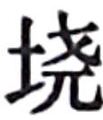
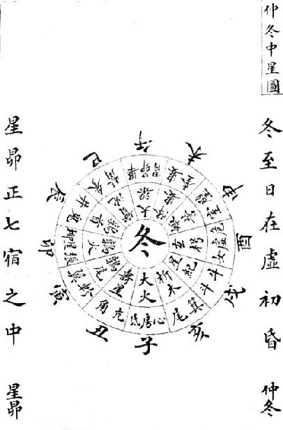

卷二十六 历书第四
陈仁锡：“圣门论四代礼乐，必以夏时为先，此周百世不易之法也。自秦人始用十月为岁首，汉兴因而不改，甚失建正之义，至是治历明时，始以正月为岁首，然后百年之谬，一旦改革，武帝纷纷制作，独此最为有得耳。”
《历书》不在《史记》亡佚的十篇之内，基本可以认定是司马迁的手笔。篇末所附《历术甲子篇》序至汉成帝建始四年（前29年），至少天汉以后的部分为后人所补（一说是褚少孙所补）也没有什么疑问，与此篇相关的大约有两大问题：第一，什么是太初历？第二，太初元年的岁名是什么？
昔自在古，历建正【建正：设定正月位置。如秦以十月为正月，称为建亥，周以十一月为正月，称为建子等。正，即正月，岁首。】 作于孟春。于时冰泮【冰泮：冰融化。】 发蛰，百草奋兴，秭鳺【秭鳺：即杜鹃鸟。】 先滜【滜：通“嗥”，鸣，叫。】 。物乃岁具，生于东，次顺四时，卒于冬分。时鸡三号，卒明。抚【抚：犹“循”。依次。】 十二月节，卒于丑。日月成，故明也。明者孟也，幽者幼也，幽明者雌雄也。雌雄代兴，而顺至正之统也。日归于西，起明于东；月归于东，起明于西。正不率天，又不由人，则凡事易坏而难成矣。
王者易姓受命，必慎始初，改正朔【改正朔：改定历法。正，岁始正月。朔，每月初一。】 ，易服色，推本天元，顺承厥意。
太史公曰：神农以前尚矣。盖黄帝考定星历，创建五行，起消息【起消息：确定阴阳消长变化。消，坤者阴，死为消。息，干者阳，生为息。】 ，正闰余【正闰余：正确确定闰月余分的大小。】 ，于是有天地神祇物类之官，是谓五官【五官：即春官、夏官、秋官、冬官、中官，分别名为青云、缙云、白云、黑云、黄云。】 。各司其序，不相乱也。民是以能有信，神是以能有明德。民神异业，敬而不渎，故神降之嘉生【嘉生：嘉谷。】 ，民以物享，灾祸不生，所求不匮。
在上古的时候，使用以孟春月为正月的历法。这时，冰雪开始融化，蛰虫苏醒过来，百草萌生新芽，子规鸟率先在原野上鸣啼。万物都长了一岁，从春季开始时降生，依次经历夏季和秋季，最后结束在冬尽春分之时。这个时候雄鸡叫三遍，天色才渐明。正月从寅月开始，经过了十二个月的节气后，直到丑月结束。日月运行都已成周，所以日月组成一个“明”字。“明”有“孟”的意思，“幽”有“幼”的意思，“幽明”就是指雌雄。雌雄交替出现，而又与以孟春为正月的历法相符。太阳在西边落下，在东边升起；残月逐渐消失在东方，新月在西方露出来。当政的不按天时行事，又不顺应民心，所以凡事都易于破坏，而难以促成。
君王接受天命而改朝换代，对于开始必然十分谨慎，修改历法，改变朝服的颜色，推算历法的起始点历元，以顺承天的旨意。
太史公说：神农以前，年代过于久远的历法就不必说了。大概从黄帝开始，考察星体的运行，制定历法，创建了五行序列，确立起阴阳死生消长的规律，纠正了闰月余分数值的大小，于是有了分管天地神祇和其他物类的官员，叫作五官。他们各自掌握属于自己的事务，不会相互杂乱。民众因此能够有所信赖，而神明也因此能够有明德。民众与神明各尽其职，民众对神明礼敬而不亵渎，神明因此赐给民众好的收成，百姓以丰洁的礼品飨祭神，而使灾祸不发生，养生所需永不匮乏。
少暤氏之衰也，九黎乱德，民神杂扰，不可放物，祸菑荐至【荐至：一起到来。】 ，莫尽其气。颛顼受之，乃命南正【南正：主管南方之政（即阳事）的官员。】 重司天以属神【属神：领属神事，如祭祀之类。】 ，命火正黎司地以属民【属民：领属民事。】 ，使复旧常，无相侵渎。
其后三苗服九黎之德，故二官咸废所职，而闰余乖次，孟陬【孟陬：正月。】 殄tiǎn灭，摄提【摄提：星名，随斗杓（北斗星的第五、六、七三颗星）所指建十二月。】 无纪，历数失序。尧复遂重黎之后，不忘旧者，使复典之，而立羲和之官。明时正度，则阴阳调，风雨节，茂气至，民无夭疫。年耆【年耆：泛指年老。耆，六十岁。】 禅舜，申戒文祖，云“天之历数在尔躬”。舜亦以命禹。由是观之，王者所重也。
夏正【夏正：夏朝历法开始的月份。】 以正月，殷正以十二月，周正以十一月。盖三王之正若循环，穷则反本。天下有道，则不失纪序【纪序：纪元的次序，即历法的次序。】 ；无道，则正朔不行于诸侯。
幽、厉之后，周室微，陪臣【陪臣：列国之臣。】 执政，史不记时，君不告朔【告朔：古代的一种祭祀仪式。天子在岁末时将来年每月的历书颁给诸侯，在每月的朔日以活羊祭告于庙。】 ，故畴人【畴人：星历算学者。】 子弟分散，或在诸夏，或在夷狄，是以其禨祥废而不统。周襄王二十六年闰三月，而《春秋》非之。先王之正时也，履端于始，举正于中，归邪于终。履端于始，序则不愆；举正于中，民则不惑；归邪于终，事则不悖。
其后战国并争，在于强国禽敌，救急解纷而已，岂遑念斯哉！是时独有邹衍，明于五德之传，而散消息之分，以显诸侯。而亦因秦灭六国，兵戎极烦，又升至尊之日浅，未暇遑也。而亦颇推五胜，而自以为获水德之瑞，更名河曰“德水”，而正以十月，色上黑。然历度闰余，未能睹其真也。
少暤氏衰落以后，九黎的诸侯作乱，民众与神明都受到了惊扰，失去了依托，灾祸接连发生，恶气不能消尽。直到颛顼受命于天，登临帝位，才任命南正重负责天事，属领神事，任命火正黎负责地事，属领民事，这才使一切又恢复到以前的状态，不致于相互侵扰渎乱。
后来三苗部族又效法九黎出来作乱，所以南正与火正二官都废弃了自己的职守，闰余的排序失去了次序，正月的设置与节气不相符合，摄提星方位与月建也不一致，历法混乱，使时序失顺。直到尧帝继位，又重新任命重、黎后人中还能推算历法的人，让这些人担任历官，设立了羲氏、和氏这两个官职。推明时令，矫正历度，使天时阴阳调和，风雨适度，这才有了兴盛的景象，民众没有夭亡、疾病的祸乱。当尧年老之后禅位给舜的时候，在文祖庙告诫舜说“按天体运行规律制定和实施历法的重担就托付给你了”。后来，舜也用相同的话来告诫禹。由此可见，历法是帝王应该看重的大事。
夏朝以正月为历正，殷朝以十二月为历正，周朝以十一月为历正。夏、殷、商这三代的正月依次循环，周而复始。天下治理得好，历法就不会乱了次序；天下混乱，则统一的历法就无法在诸侯国之间通用。
自从周幽王和周厉王以后，西周王室衰微，列国大夫执掌国家大权，史官不记载年月日，君王不行告朔礼，所以历算世家的子弟纷纷出走，有的在中原诸侯国中任职，有的到了夷狄，所以祝祷祭祀的制度荒废而不能统一。周襄王二十六年有闰三月，而《春秋》非难它置闰月不当。因为古代帝王设定历法，首先要确定好历元，再由中气纠正十二月的位置，有日月余分则归于年末。确定好历法的起始点，则年月日等的次序就不会失误；以中气纠正月位，百姓就不会感到迷惑；将闰余置于年终，诸事就不会悖乱。
后来，到了战国诸雄并争的时期，君臣上下只关心如何使国家富强起来，战败敌国，挽救危难，排解纠纷而已，哪有余力考虑天文历法的事情！当时只有邹衍懂得五德终始相传，而且散布阴阳消长的分限等理论，因此显扬于诸侯。也因为强秦在征灭六国时，战事频繁，加上秦始皇当上皇帝的时间还不长，所以顾不上制定新的历法。但是秦时颇为注重推求五行胜克，自以为获得水德的祥瑞，所以将黄河改名为“德水”，沿用夏朝的历法，以十月为正月，崇尚黑色。至于历法中具体推算五星的行度和闰月的安排是否正确，也就没有仔细考虑。
汉兴，高祖曰“北畤待我而起”，亦自以为获水德之瑞。虽明习历及张苍等，咸以为然。是时天下初定，方纲纪大基，高后女主，皆未遑，故袭秦正朔服色。
至孝文时，鲁人公孙臣以终始五德上书，言“汉得土德，宜更元，改正朔，易服色。当有瑞，瑞黄龙见”。事下丞相张苍，张苍亦学律历，以为非是，罢之。其后黄龙见成纪，张苍自黜，所欲论着不成。而新垣平以望气见，颇言正历服色事，贵幸，后作乱，故孝文帝废不复问。
至今上即位，招致方士唐都，分其天部；而巴落下闳运算转历，然后日辰之度与夏正同。乃改元，更官号，封泰山。因诏御史曰：“乃者，有司言星度之未定也，广延宣问，以理星度，未能詹【詹：通“赡”。满足。】 也。盖闻昔者黄帝合而不死，名察度验，定清浊，起五部，建气物分数。然盖尚矣。书缺乐弛，朕甚闵焉。朕唯未能循明也，绩日分，率应水德之胜。今日顺夏至，黄钟为宫，林钟为征，太蔟为商，南吕为羽，姑洗为角。自是以后，气复正，羽声复清，名复正变，以至子日当冬至，则阴阳离合之道行焉。十一月甲子朔旦冬至已詹，其更以七年为太初元年。年名‘焉逢摄提格’，月名‘毕聚’，日得甲子，夜半朔旦冬至。”
当汉朝刚刚兴起的时候，高祖说“是北方的黑帝等待我来创建”，也自认为获得了水德的祥瑞。懂得历法的官员以及张苍等人，也认同汉高祖的看法。当时天下初步平定，国家的基本规章制度和法令才刚刚创建，此后高后以女子主政，同样没有考虑到历法的事情，所以仍承袭秦朝的历法和朝服的颜色。
到了孝文帝的时候，鲁地一个叫公孙臣的人以五德循环的理论向皇帝上书，说“汉朝得到的是土德而不是水德，应该变更历法的历元，修改正朔，更换朝服的颜色。这样天就会降下祥瑞，有黄龙出现”。皇帝把这件事情交给丞相张苍处理，张苍也学过律历，并不认为是土德，于是没有理睬。后来黄龙真的在成纪这个地方出现了，于是张苍不得已上书自请罢黜，他论述汉朝获得水德瑞兆的著作也没有写成。后来，又有一个叫新垣平的人由于善于观望云气得见天子，说了些改正历法和服色的事，受到宠幸，后来却反动叛乱，所以孝文帝就再也不过问这件事了。
到当今皇帝即位后，招来方士唐都，测量周天各部的星宿度数；任用来自巴郡的落下闳，让他推算日月星辰制历，以此得到的太阳各月位置的度数与夏历相同。于是就改定历元，更换官号，到泰山封禅。并诏告御史说：“过去主管星历的官员说星度未经确定，便广泛地征求意见，该怎样测定星度，但未能得到满意的答案。听说以前黄帝制历因为与季节相符，所以能循环地使用下去，这种历法用实际天象检验，审定律吕的清浊，确立起四时与五行的关系，创建了节气的日分余数。然而，这已经是很久以前的事了。现在有关天文历数方面的典籍缺佚，乐理也废弛了，我深感遗憾。只是我又无力把它们补修完备。现在的历法经过周密的测量和运算，全都与能克制水德的土德相合，现在太阳循着经过夏至、冬至的黄道运行，以黄钟为宫声，以林钟为徵声，以太簇为商声，以南吕为羽声，以姑洗为角声。从此以后，节气又正确了，作为定调的最高羽声又清明了，各种名称都和实际相符，以甲子日逢冬至开始为历元，则阴阳交替的规律就通行了。现在，十一月甲子日又恰逢朔日而节气交冬至，正是改历换元的好时机，于是变改元封七年为太初元年。确定年名为‘焉逢摄提格’，确定月名为‘毕聚’，日名为甲子，夜半时是朔日的开始，节气变为冬至。”
◎ 历术甲子篇
太初元年，岁名“焉逢摄提格”，月名“毕聚”，日得甲子，夜半朔旦冬至。
△ 正北【正北：冬至所在辰次的方位。太初元年冬至在夜半子时，子的方位是正北。】 十二【十二：指一年的月数，无闰月为十二个月，有闰月为十三个月。】
无大余【大余：指月朔大余，用于计算月朔甲子日名的参数。已知本年初的月朔干支日名，将本年的总天数减去所含的甲子周数，剩余的不足一甲子的部分，整日数称为大余。从本年初的月朔干支，数到大余数目之外的第一个干支名，就是下年初的月朔干支日名。】 ，无小余【小余：指月朔大余，是月朔甲子余数中不足一整日的部分。】 ；
无大余【大余：指冬至大余。已知本年冬至日名，从本年总天数中除去所包含的甲子周数，剩余部分中的整日数称为大余。从本年初的冬至干支日名，数到大余数之外的第一个干支就是下年冬至的干支日名。】 ，无小余【小余：指冬至小余，即冬至日余数中不足一整日的部分。】 ；
焉逢摄提格太初元年。
十二
大余五十四，小余三百四十八；
大余五，小余八；
端蒙单阏【端蒙单阏：端蒙作“旃蒙”，为“乙”；单阏为“卯”，知端蒙单阏为乙卯年。】 二年。
闰十三
大余四十八，小余六百九十六；大余十，小余十六；
游兆执徐三年。
◎ 历术甲子篇
历元为太初元年，年名“焉逢摄提格”，月名“毕聚”，日期为甲子，夜半时为冬至节。
冬至在子时，位于正北；
平年十二个月；
月朔无大余，无小余；
冬至无大余，无小余；
焉逢摄提格（甲寅年），即太初元年。
平年十二个月；
月朔大余为五十四日，小余为三百四十八分；
冬至大余为五日，小余为八分；
端蒙单阏（乙卯年），即太初二年。
闰年十三个月；
月朔大余为四十八日，小余为六百九十六分；
冬至大余为十日，小余为十六分；
游兆执徐（丙辰年），即太初三年。
十二
大余十二，小余六百三；
大余十五，小余二十四；
强梧大荒落四年。
十二
大余七，小余十一；
大余二十一，无小余；
徒维敦牂天汉元年。
闰十三
大余一，小余三百五十九；
大余二十六，小余八；
祝犁协洽二年。
大余二十五，小余二百六十六；
大余三十一，小余十六；
商横涒滩三年。
十二
大余十九，小余六百一十四；
大余三十六，小余二十四；
昭阳作鄂四年。
闰十三
大余十四，小余二十二；
大余四十二，无小余；
横艾淹茂太始元年。
十二
大余三十七，小余八百六十九；
大余四十七，小余八；
尚章大渊献二年。
平年十二个月；
月朔大余为十二日，小余为六百零三分；
冬至大余为十五日，小余为二十四分；
强梧大荒落（丁巳年），即太初四年。
平年十二个月；
月朔大余为七日，小余为十一分；
冬至大余为二十一日，无小余；
徒维敦牂（戊午年），即天汉元年。
闰年十三个月；
月朔大余为一日，小余为三百五十九分；
冬至大余为二十六日；小余为八分；
祝犁协洽（己未年），即天汉二年。
平年十二个月；
月朔大余为二十五日，小余为二百六十六分；
冬至大余为三十一日，小余为十六分；
商横涒滩（庚申年），即天汉三年。
平年十二个月；
月朔大余为十九日，小余为六百一十四分；
冬至大余为三十六日，小余为二十四分；
昭阳作鄂（辛酉年），即天汉四年。
闰年十三个月；
月朔大余为十四日，小余为二十二分；
冬至大余为四十二日，无小余；
横艾淹茂（壬戌年），即太始元年。
平年十二个月；
月朔大余为三十七日，小余为八百六十九分；
冬至大余为四十七日，小余为八分；
尚章大渊献（癸亥年），即太始二年。
闰十三
大余三十二，小余二百七十七；
大余五十二，小余一十六；
焉逢困敦三年。
十二
大余五十六，小余一百八十四；
大余五十七，小余二十四；
端蒙赤奋若四年。
十二
大余五十，小余五百三十二；
大余三，无小余；
游兆摄提格征和元年。
闰十三
大余四十四，小余八百八十；
大余八，小余八；
强梧单阏二年。
十二
大余八，小余七百八十七；
大余十三，小余十六；
徒维执徐三年。
十二
大余三，小余一百九十五；
大余十八，小余二十四；
祝犁大荒落四年。
闰年十三个月；
月朔大余为三十二日，小余为二百七十七分；
冬至大余为五十二日，小余为十六分；
焉逢困敦（甲子年），即太始三年。
平年十二个月；
月朔大余为五十六日，小余为一百八十四分；
冬至大余为五十七日，小余为二十四分；
端蒙赤奋若（乙丑年），即太始四年。
平年十二个月；
月朔大余为五十日，小余为五百三十二分；
冬至大余为日三日，无小余；
游兆摄提格（丙寅年），即征和元年。
闰年十三个月；
月朔大余为四十四日，小余为八百八十分；
冬至大余为日八日，小余为八分；
强梧单阏（丁卯年），即征和二年。
平年十二个月；
月朔大余为八日，小余为七百八十七分；
冬至大余为十三日，小余为十六分；
徒维执徐（戊辰年），即征和三年。平年十二个月；
月朔大余为三日，小余为一百九十五分；
冬至大余为十八日，小余为二十四分；
祝犁大荒落（己已年），即征和四年。
闰十三
大余五十七，小余五百四十三；
大余二十四，无小余；
商横敦牂后元元年。
十二
大余二十一，小余四百五十；
大余二十九，小余八；
昭阳汁洽二年。
闰十三
大余十五，小余七百九十八；
大余三十四，小余十六；
横艾涒滩始元元年。
△ 正西
十二
大余三十九，小余七百五；
大余三十九，小余二十四；
尚章作噩二年。
十二
大余三十四，小余一百一十三；
大余四十五，无小余；
焉逢淹茂三年。
闰十三
大余二十八，小余四百六十一；
大余五十，小余八；
端蒙大渊献四年。
闰年十三个月；
月朔大余为五十七日，小余为五百四十三分；
冬至大余为二十四日，无小余；
商横敦牂（庚午年），即后元元年。
平年十二个月；
月朔大余为二十一日，小余为四百五十分；
冬至大余为日二十九日，小余为八分；
昭阳汁洽（辛未年），即后元二年。
闰年十三个月；
月朔大余为十五日，小余为七百九十八分；
冬至大余为三十四日，小余为十六分；
横艾涒滩（壬申年），即始元元年。
冬至在酉时，方位正西方；
平年十二个月；
月朔大余为三十九日，小余为七百零五分；
冬至大余为三十九日，小余为二十四分；
尚章作噩（癸酉年），即始元二年。
平年十二个月；
月朔大余为三十四日，小余为一百一十三分；
冬至大余为四十五日，无小余；
焉逢淹茂（甲戌年），即始元三年。
闰年十三个月；
月朔大余为二十八日，小余为四百六十一分；
冬至大余为五十日，小余为八分；
端蒙大渊献（乙亥年），即始元四年。
十二
大余五十二，小余三百六十八；
大余五十五，小余十六；
游兆困敦五年。
十二
大余四十六，小余七百一十六；
无大余，小余二十四；
强梧赤奋若六年。
闰十三
大余四十一，小余一百二十四；
大余六，无小余；
徒维摄提格元凤元年。
十二
大余五，小余三十一；
大余十一，小余八；
祝犁单阏二年。
十二
大余五十九，小余三百七十九；
大余十六，小余十六；
商横执徐三年。
闰十三
大余五十三，小余七百二十七；
大余二十一，小余二十四；
昭阳大荒落四年。
平年十二个月；
月朔大余为五十二日，小余为三百六十八分；
冬至大余为五十五日，小余为十六分；
游兆困敦（丙子年），即始元五年。
平年十二个月；
月朔大余为四十六日，小余为七百一十六分；
冬至无大余，小余为二十四分；
强梧赤奋若（丁丑年），即始元六年。
闰年十三个月；
月朔大余为四十一日，小余为一百二十四分；
冬至大余为六日，无小余；
徒维摄提格（戊寅年），即元凤元年。
平年十二个月；
月朔大余为五日，小余为三十一分；
冬至大余为十一日，小余为八分；
祝犁单阏（己卯年），即元凤二年。
平年十二个月；
月朔大余为五十九日，小余为三百七十九分；
冬至大余为日十六日，小余为十六分；
商横执徐（庚辰年），即元凤三年。
闰年十三个月；
月朔大余为五十三日，小余为七百二十七分；
冬至大余为二十一日，小余为二十四分；
昭阳大荒落（辛巳年），即元凤四年。
十二
大余十七，小余六百三十四；
大余二十七，无小余；
横艾敦牂五年。
闰十三
大余十二，小余四十二；
大余三十二，小余八；
尚章汁洽六年。
十二
大余三十五，小余八百八十九；
大余三十七，小余十六；
焉逢涒滩元平元年
十二
大余三十，小余二百九十七；
大余四十二，小余二十四；
端蒙作噩本始元年。
闰十三
大余二十四，小余六百四十五；
大余四十八，无小余；
游兆阉茂二年。
十二
大余四十八，小余五百五十二；
大余五十三，小余八；
强梧大渊献三年。
平年十二个月；
月朔大余为十七日，小余为六百三十四分；
冬至大余为二十七日，无小余；
横艾敦牂（壬午年），即元凤五年。
闰年十三个月；
月朔大余为十二日，小余为四十二分；
冬至大余为三十二日，小余为八分；
尚章汁洽（癸未年），即元凤六年。
平年十二个月；
月朔大余为三十五日，小余为八百八十九分；
冬至大余为三十七日，小余为十六分；
焉逢涒滩（甲申年），即元平元年。
平年十二个月；
月朔大余为三十日，小余为二百九十七分；
冬至大余为四十二日，小余为二十四分；
端蒙作噩（乙酉年），即本始元年。
闰年十三个月；
月朔大余为二十四日，小余为六百四十五分；
冬至大余为四十八日，无小余；
游兆阉茂（丙戌年），即本始二年。
平年十二个月；
月朔大余为四十八日，小余为五百五十二分；
冬至大余为五十三日，小余为八分；
强梧大渊献（丁亥年），即本始三年。
十二
大余四十二，小余九百；
大余五十八，小余十六；
徒维困敦四年。
闰十三
大余三十七，小余三百八；
大余三，小余二十四；
祝犁赤奋若地节元年。
十二
大余一，小余二百一十五；
大余九，无小余；
商横摄提格二年。
闰十三
大余五十五，小余五百六十三；
大余十四，小余八；
昭阳单阏三年。
△ 正南
十二
大余十九，小余四百七十；
大余十九，小余十六；
横艾执徐四年。
平年十二个月；
月朔大余为四十二日，小余为九百分；
冬至大余为五十八日，小余为十六分；
徒维困敦（戊子年），即本始四年。
闰年十三个月；
月朔大余为三十七日，小余为三百零八分；
冬至大余为三日，小余为二十四分；
祝犁赤奋若（己丑年），即地节元年。
平年十二个月；
月朔大余为一日，小余为二百一十五分；
冬至大余为九日，无小余；
商横摄提格（庚寅年），即地节二年。
闰年十三个月；
月朔大余为五十五日，小余为五百六十三分；
冬至大余为十四日，小余为八分；
昭阳单阏（辛卯年），地节三年。
太阳位于正南方，冬至在午时；
平年十二个月；
月朔大余为十九日，小余为四百七十分；
冬至大余为十九日，小余为十六分；
横艾执徐（壬辰年），地节四年。
十二
大余十三，小余八百一十八；
大余二十四，小余二十四；
尚章大荒落元康元年。
闰十三
大余八，小余二百二十六；
大余三十，无小余；
焉逢敦牂二年。
十二
大余三十二，小余一百三十三；
大余三十五，小余八；
端蒙协洽三年。
十二
大余二十六，小余四百八十一；
大余四十，小余十六；
游兆涒滩四年。
闰十三
大余二十，小余八百二十九；
大余四十五，小余二十四；
强梧作噩神雀元年。
十二
大余四十四，小余七百三十六；
大余五十一，无小余；
徒维淹茂二年。
十二
大余三十九，小余一百四十四；
大余五十六，小余八；
祝犁大渊献三年。
平年十二个月；
月朔大余为十三日，小余为八百一十八分；
冬至大余为二十四日，小余为二十四分；
尚章大荒落（癸巳年），即元康元年。
闰年十三个月；
月朔大余为八日，小余为二百二十六分；
冬至大余为三十日，无小余；
焉逢敦牂（甲午年），即元康二年。
平年十二个月；
月朔大余为三十二日，小余为一百三十三分；
冬至大余为三十五日，小余为八分；
端蒙协洽（乙未年），即元康三年。
平年十二个月；
月朔大余为二十六日，小余为四百八十一分；
冬至大余为四十日，小余为十六分；
游兆涒滩（丙申年），即元康四年。
闰年十三个月；
月朔大余为二十日，小余为八百二十九分；
冬至大余为四十五日，小余为二十四分；
强梧作噩（丁酉年），即神雀元年。
平年十二个月；
月朔大余为四十四日，小余为七百三十六分；
冬至大余为五十一日，无小余；
徒维淹茂（戊戌年），即神雀二年。
平年十二个月；
月朔大余为三十九日，小余为一百四十四分；
冬至大余为五十六日，小余为八分；
祝犁大渊献（己亥年），即神雀三年。
闰十三
大余三十三，小余四百九十二；
大余一，小余十六；
商横困敦四年。
十二
大余五十七，小余三百九十九；
大余六，小余二十四；
昭阳赤奋若五凤元年。
闰十三
大余五十一，小余七百四十七；
大余十二，无小余；
横艾摄提格二年。
十二
大余十五，小余六百五十四；
大余十七，小余八；
尚章单阏三年。
十二
大余十，小余六十二；
大余二十二，小余十六；
焉逢执徐四年。
闰十三
大余四，小余四百一十；
大余二十七，小余二十四；
端蒙大荒落甘露元年。
闰年十三个月；
月朔大余为三十三日，小余为四百九十二分；
冬至大余为一日，小余为十六分；
商横困敦（庚子年），即神雀四年。
平年十二个月；
月朔大余为五十七日，小余为三百九十九分；
冬至大余为六日，小余为二十四分；
昭阳赤奋若（辛丑年），即五凤元年。
闰年十三个月；
月朔大余为五十一日，小余为七百四十七分；
冬至大余为十二日，无小余；
横艾摄提格（壬寅年），即五凤二年。
平年十二个月；
月朔大余为十五日，小余为六百五十四分；
冬至大余为十七日，小余为八分；
尚章单阏（癸卯年），即五凤三年。
平年十二个月；
月朔大余为十日，小余为六十二分；
冬至大余为二十二日，小余为十六分；
焉逢执徐（甲辰年），即五凤四年。
闰年十三个月；
月朔大余为四日，小余为四百一十分；
冬至大余为二十七日，小余为二十四分；
端蒙大荒落（乙巳年），即甘露元年。
十二
大余二十八，小余三百一十七；
大余三十三，无小余；
游兆敦牂二年。
十二
大余二十二，小余六百六十五；
大余三十八，小余八；
强梧协洽三年。
闰十三
大余十七，小余七十三；
大余四十三，小余十六；
徒维涒滩四年。
十二
大余四十，小余九百二十；
大余四十八，小余二十四；
祝犁作噩黄龙元年。
闰十三
大余三十五，小余三百二十八；
大余五十四，无小余；
商横淹茂初元元年。
平年十二个月；
月朔大余为二十八日，小余为三百一十七分；
冬至大余为三十三日，无小余；
游兆敦牂（丙午年），即甘露二年。
平年十二个月；
月朔大余为二十二日，小余为六百六十五分；
冬至大余为三十八日，小余为八分；
强梧协洽（丁未年），即甘露三年。
闰年十三个月；
月朔大余为十七日，小余为七十三分；
冬至大余为四十三日，小余为十六分；
徒维涒滩（戊申年），即甘露四年。
平年十二个月；
月朔大余为四十日，小余为九百二十分；
冬至大余为四十八日，小余为二十四分；
祝犁作噩（己酉年），即黄龙元年。
闰年十三个月；
月朔大余为三十五日，小余为三百二十八分；
冬至大余为五十四日，无小余；
商横淹茂（庚戌年），即初元元年。
△ 正东
十二
大余五十九，小余二百三十五；
大余五十九，小余八；
昭阳大渊献二年。
十二
大余五十三，小余五百八十三；
大余四，小余十六；
横艾困敦三年。
闰十三
大余四十七，小余九百三十一；
大余九，小余二十四；
尚章赤奋若四年。
十二
大余十一，小余八百三十八；
大余十五，无小余；
焉逢摄提格五年。
太阳位于正东方，冬至是卯时；
平年十二个月；
月朔大余为五十九日，小余为二百三十五分；
冬至大余为五十九日，小余为八分；
昭阳大渊献（辛亥年），即初元二年。
平年十二个月；
月朔大余为五十三日，小余为五百八十三分；
冬至大余为四日，小余为十六分；
横艾困敦（壬子年），即初元三年。
闰年十三个月；
月朔大余为四十七日，小余为九百三十一分；
冬至大余为九日，小余为二十四分；
尚章赤奋若（癸丑年），即初元四年。
平年十二个月；
月朔大余为十一日，小余为八百三十八分；
冬至大余为十五日，无小余；
焉逢摄提格（甲寅年），即初元五年。
十二
大余六，小余二百四十六；
大余二十，小余八；
端蒙单阏永光元年。
闰十三
无大余，小余五百九十四；
大余二十五，小余十六；
游兆执徐二年。
十二
大余二十四，小余五百一；
大余三十，小余二十四；
强梧大荒落三年。
十二
大余十八，小余八百四十九；
大余三十六，无小余；
徒维敦牂四年。
闰十三
大余十三，小余二百五十七；
大余四十一，小余八；
祝犁协洽五年。
平年十二个月；
月朔大余为六日，小余为二百四十六分；
冬至大余为二十日，小余为八分；
端蒙单阏（乙卯年），即永光元年。
闰年十三个月；
月朔无大余，小余为五百九十四分；
冬至大余为二十五日，小余为十六分；
游兆执徐（丙辰年），即永光二年。
平年十二个月；
月朔大余为二十四日，小余为五百零一分；
冬至大余为三十日，小余为二十四分；
强梧大荒落（丁巳年），即永光三年。
平年十二个月；
月朔大余为十八日，小余为八百四十九分；
冬至大余为三十六日，小余为为零；
徒维敦牂（戊午年），即永光四年。
闰年十三个月；
月朔大余为十三日，小余为二百五十七分；
冬至大余为四十一日，小余为八分；
祝犁协洽（己未年），即永光五年。
十二
大余三十七，小余一百六十四；
大余四十六，小余十六；
商横涒滩建昭元年。
闰十三
大余三十一，小余五百一十二；
大余五十一，小余二十四；
昭阳作噩二年。
十二
大余五十五，小余四百一十九；
大余五十七，无小余；
横艾阉茂三年。
十二
大余四十九，小余七百六十七；
大余二，小余八；
尚章大渊献四年。
闰十三
大余四十四，小余一百七十五；
大余七，小余十六；
焉逢困敦五年。
平年十二个月；
月朔大余为三十七日，小余为一百六十四分；
冬至大余为四十六日，小余为十六分；
商横涒滩（庚申年），即建昭元年。
闰年十三个月；
月朔大余为三十一日，小余为五百一十二分；
冬至大余为五十一日，小余为二十四分；
昭阳作噩（辛酉年），即建昭二年。
平年十二个月；
月朔大余为五十五日，小余为四百一十九分；
冬至大余为五十七日，无小余；
横艾阉茂（壬戌年），即建昭三年。
平年十二个月；
月朔大余为四十九日，小余为七百六十七分；
冬至大余为二日，小余为八分；
尚章大渊献（癸亥年），即建昭四年。
闰年十三个月；
月朔大余为四十四日，小余为一百七十五分；
冬至大余为七日，小余为十六分；
焉逢困敦（甲子年），即建昭五年。
十二
大余八，小余八十二；
大余十二，小余二十四；
端蒙赤奋若竟宁元年。
十二
大余二，小余四百三十；
大余十八，无小余；
游兆摄提格建始元年。
闰十三
大余五十六，小余七百七十八；
大余二十三，小余八；
强梧单阏二年。
十二
大余二十，小余六百八十五；
大余二十八，小余十六；
徒维执徐三年。
闰十三
大余十五，小余九十三；
大余三十三，小余二十四；
祝犁大荒落四年。
右《历书》：大余者，日也。小余者，月也。端蒙者，年名也。支：丑名赤奋若，寅名摄提格。干：丙名游兆。正北，冬至加子时；正西，加酉时；正南，加午时；正东，加卯时。
平年十二个月；
月朔大余为八日，小余为八十二分；
冬至大余为十二日，小余为二十四分；
端蒙赤奋若（乙丑年），即竟宁元年。
平年十二个月；
月朔大余为二日，小余为四百三十分；
冬至大余为十八日，无小余；
游兆摄提格（丙寅年），即建始元年。
闰年十三个月；
月朔大余为五十六日，小余为七百七十八分；
冬至大余为二十三日，小余为八分；
强梧单阏（丁卯年），即建始二年。
平年十二个月；
月朔大余为二十日，小余为六百八十五分；
冬至大余为二十八日，小余为十六分；
徒维执徐（戊辰年），即建始三年。
闰年十三个月；
月朔大余为十五日，小余为九十三分；
冬至大余为三十三日，小余为二十四分；
祝犁大荒落（己已年），即建始四年。
以上《历书》中：大余，是指剩余的日数。小余，是指剩余的分数。端蒙等，是年的名字。年名包括干支两部分，地支：例如丑叫作赤奋若，寅叫作摄提格；天干：例如丙叫作游兆。正北，表示冬至在子时；正西，表示冬至在酉时；正南，表示冬至在午时；正东，表示冬至在卯时。
卷二十七 天官书第五
陈仁锡：“《天官书》独无序何也？岂后世缺之耶？其中文字无限奇古，极多变化。篇末有太史公论‘自初生民以来’至‘天官备矣’一章，盖本书之首序，而错简在后耳。”
《天官书》与《历书》一样，也不在《史记》十篇亡书之数，必为太史公原着（也有人以为是“妄人录《汉书·天文志》而成”，可不论），当然不排斥其中有错简以及后人窜入的成分，这是古书难以避免的情况，但不影响它的本来价值。《天官书》的内容大概可七章，一为经星，分作五宫记述三垣二十八宿等恒星；二为五纬，记木、火、土、金、水五行星；三为二曜，记日与月；四为异星；五为云气；六为候岁；七为总论。
中宫天极星，其一明者，太一常居也；旁三星三公，或曰子属。后句四星，末大星正妃，余三星后宫之属也。环之匡卫【匡卫：环绕护卫。】 十二星，藩臣。皆曰紫宫。
前列直斗口三星，随北端兑，若见若不，曰阴德，或曰天一。紫宫左三星曰天枪，右五星曰天棓bàng，后六星绝汉抵营室，曰阁道。
中宫正中央的一颗星星称为天极星，比它周围的星星都要明亮，常居于正北不动，所以称它为太一，是天帝的意思；旁边的三颗星称为三公，也有人称为太子、庶子。天极星的后面是形如钩状的勾星四颗，其中最后一颗较为明亮的星称为正妃，其余三颗星为后宫的嫔妃之类。像护卫一样环绕护卫着天极星的十二颗星的，是藩臣。它们合起来就称为紫宫。
挡在紫宫门口内的三星，向北面下垂，尖端的那颗星若隐若现，称为阴德，或者称为天一。紫宫左前方的三颗星叫天枪，右前方的五星叫天棓，后面的六颗星越过银河可抵达营室的星座，称为阁道。
北斗七星，所谓“旋玑【旋玑：即“璇玑”，古时天文仪器，浑天仪。】 、玉衡【玉衡：观察天文的工具，饰有玉石。】 以齐七政”。杓携龙角，衡殷南斗，魁枕参首。用昏建者杓；杓，自华以西南。夜半建者衡；衡，殷中州河、济之间。平旦建者魁；魁，海岱以东北也。斗为帝车，运于中央，临制四乡。分阴阳，建四时，均五行，移节度，定诸纪，皆系于斗。
斗魁戴匡【匡：同“筐”。】 六星曰文昌宫：一曰上将，二曰次将，三曰贵相，四曰司命，五曰司中，六曰司禄。在斗魁中，贵人之牢。魁下六星，两两相比者，名曰三能。三能色齐，君臣和；不齐，为乖戾。辅星明近，辅臣亲强；斥小，疏弱。
北斗七星，就是《尚书》说的“用璇玑、玉衡的运动来确定七项政事的星座”。北斗的斗杓与东宫七宿中的角宿相连，斗衡与南斗宿殷殷相对，斗魁枕于西方七宿中的参宿头顶。黄昏时以斗杓所指方位建明四时月份；斗杓，主华县西南方向的祸福吉凶。夜半时以斗衡所指方位建明四时月份；斗衡，主黄河、济水之间的中原地区的吉凶祸福。黎明时以斗魁所指方位建明四时月份；斗魁，主海、岱东北方向的吉凶祸福。北斗就像天帝乘坐的车子，它在中央运转，它的运动可主宰四方地域。分别阴阳，建明四时，平均五行，移易节度，确定十二辰纪的位置，全都依仗北斗。
斗魁上方像一只筐的六颗星被称为文昌宫：一是上将，二是次将，三是贵相，四是司命，五是司中，六是司禄。在斗魁里面，是贵人的牢房。在斗魁下方的六颗星，每两颗都相近，名叫三能。三能的颜色一致，表示君臣和睦；三能的颜色不同，表示君臣关系紧张。在北斗第六星旁边的是辅星，辅星如果明亮而且靠近，表明辅臣亲睦，国家强盛；如果远离而且暗淡，表明辅臣和皇帝疏远，国家衰弱。
杓端有两星：一内为矛，招摇；一外为盾，天锋。有句圜【圜：围绕。】 十五星，属杓，曰贱人之牢。其牢中星实则囚多，虚则开出。
天一、枪、棓、矛、盾动摇，角大，兵起。
东宫苍龙，房、心。心为明堂，大星天王，前后星子属。不欲直，直则天王失计。房为府，曰天驷。其阴，右骖。旁有两星曰衿；北一星曰辖。东北曲十二星曰旗，旗中四星曰天市；中六星曰市楼。市中星众者实；其虚则秏。房南众星曰骑官。
左角，李；右角，将。大角者，天王帝廷。其两旁各有三星，鼎足句之，曰摄提。摄提者，直【直：同“值”，正，恰好。】 斗杓所指，以建时节，故曰“摄提格”。亢为疏庙，主疾。其南北两大星，曰南门。氐为天根，主疫。
尾为九子，曰君臣；斥绝，不和。箕为敖客，曰口舌。
火犯守角，则有战。房、心，王者恶之也。
斗杓的末端有两颗星：靠近斗杓一颗是矛，称为招摇；较远的一颗是盾，称为天锋。有围成一个圆圈的十五颗星，附属于斗杓，称为贱人之牢。如果牢中星很多，表示囚犯多；如果牢中星很少，表示囚犯已得到开脱。
如果天一、枪、棓、矛、盾这五颗星摇动，芒角显得很大，将有战事发生。
东宫名苍龙，它的代表星座是房宿和心宿。心宿是天王颁布政令的殿堂，其中大星就是天王，前后的两颗小星是它的子辈。三颗星不希望它们在一条直线上，如果在一条直线上意味着天王政令失误。房宿是天府，又称为天驷。天驷的北边一星是右边的骖马，它的旁边有两星称为衿；衿星北边的一星叫辖。房宿东北弯曲的十二颗星称为旗，旗中有四颗星称为天市；靠南居中有六颗星称为市楼。天市中如果星多，表示国库充实；如果星少，表示国库空虚。房宿南边的一群星称为骑官。
角宿左边的星是李星，主刑法；右边的星是将星，主军事。角宿旁边的大角星，是天王的帝廷。大角星的两旁各有三颗星，呈鼎足装排列，称为摄提。摄提星，它们正对着斗杓所指的方向，可以更准确地指示时节，所以称为“摄提格”。亢宿是外庙，主管疾病。亢宿的南北各有两颗大星，称为南门。氐宿是天的根，主管瘟疫之类的传染病。

仲春中星图，选自《钦定书经图说》。
尾宿有九颗星，代表着君臣；如果它们之间相互排斥隔绝，意味君臣不和。箕宿是敖客，主口舌是非之象。
火星运行如果接近或停留在角宿，预示着将有战事发生。它若接近或停留在房宿或者心宿，也是王者厌恶的事情。
南宫朱鸟，权、衡。衡，太微，三光之廷。匡卫十二星，藩臣：西，将；东，相；南四星，执法；中，端门；门左右，掖门。门内六星，诸侯。其内五星，五帝坐。后聚一十五星，蔚然，曰郎位；傍一大星，将位也。月、五星顺入，轨道，司其出，所守，天子所诛也。其逆入，若不轨道，以所犯命之；中坐，成形，皆群下从谋也。金、火尤甚。廷藩西有隋星五，曰少微，士大夫。权，轩辕。轩辕，黄龙体。前大星，女主象；旁小星，御者后宫属。月、五星守犯者，如衡占。
南宫名朱鸟，它的代表星座是权与衡。衡为太微，是日、月和五星的宫廷。环绕太微的十二颗星，是藩臣：西边的，是将星；东边的，是相星；南边的四颗星，是执法；中间的，是端门；端门左右的星，是掖门。门内的六颗星，是诸侯。里面的五颗星，是五帝座。太微后面聚集着的十五颗星，颇为明亮，称为郎位；旁边有一亮星，称为将位。月亮和五星循着正常的轨道顺序进入太微，就要十分小心地观察它们出太微和守候在那里的情况，如有违犯，由天子派出使臣进行诛杀。如果月亮与五星是逆入的，就是不按轨道进入太微，它们接近什么星，就责罚相应官职的大臣；如果侵犯的是五帝座，一定有灾祸，因为群臣相从的不轨行迹已经暴露。如果是五星中金星和火星出现这种运行，则情况更为严重。在太微西边有五颗呈椭圆形的星座，称为少微，是士大夫。权，就是轩辕。轩辕，是黄龙星座的主体。轩辕前面一颗大星，是女主的象征；旁边的小星，是侍御的嫔妃，属于后宫。月亮和五星在轩辕附近或者守候在这里的情况，其占卜的原则和衡相同。
东井为水事。其西曲星曰钺。钺北，北河；南，南河；两河、天阙间为关梁。舆鬼，鬼祠事；中白者为质。火守南北河，兵起，谷不登【登：谷物成熟。】 。故德成衡，观成潢，伤成钺，祸成井，诛成质。
柳为鸟注，主木草。七星，颈，为员官。主急事。张，素，为厨，主觞客。翼为羽翮，主远客。
轸为车，主风。其旁有一小星，曰长沙，星星不欲明；明与四星等，若五星入轸中，兵大起。轸南众星曰天库楼；库有五车。车星角若益众，及不具，无处车马。
西宫咸池，曰天五潢。五潢，五帝车舍。火入，旱；金，兵；水，水。中有三柱；柱不具，兵起。
东井是主管水事的星宿。在它的西面弯曲的星座叫钺。钺的北面，是北河；南面，是南河；两河和天阙星官之间是日月五星的信道。鬼宿主管供奉祭祀的事；鬼宿的中间有白色的积气，叫作质星。火星如果守候着南北河，则战事将起，五谷不登。因此，有德的人先成形于衡宿，帝王出外巡幸可以在天潢星区出现预兆，伤败的事表现在钺宿，灾祸的事表现在井宿，诛杀的事表现在质宿。
柳宿是朱鸟的嘴，主管草木之事。星宿七星，是朱鸟的脖颈，是员官。主管紧急事务。张宿，是朱鸟的嗉囊，是厨子，主管宴请宾客。翼宿是朱鸟的羽翅，主管远客到来之事。
轸宿是车子，主管风。它的旁边有一颗小星，名为长沙，长沙的光通常微弱得看不见；但它发亮时能达到和轸宿四星相同的亮度，如果五颗星进入轸宿，那么可能发生很大的战事。轸宿南面的一群星称为天库楼；天库楼中还有五车。如果车星的数量很多，且芒角闪动，不成行列，那就会发生动乱，无处安顿车马。
西宫之神是白虎，代表星是咸池，咸池星是天五潢。五潢星，是五帝的车驾和房舍。火星入五潢，预示有旱灾；金星入五潢，预示有兵灾；水星入五潢，预示有水灾。五潢中有三柱；每柱各三颗星，如果三柱不成行列，预示有战事发生。
奎曰封豕，为沟渎。娄为聚众。胃为天仓。其南众星曰廥积【廥积：库藏的粮食或秣草。】 。
昴曰髦头，胡星也，为白衣会。毕曰罕车，为边兵，主弋猎。其大星旁小星为附耳。附耳摇动，有谗乱臣在侧。昴、毕间为天街。其阴，阴国；阳，阳国。
参为白虎。三星直者，是为衡石。下有三星，兑，曰罚，为斩艾事。其外四星，左右肩股也。小三星隅置，曰觜觿，为虎首，主葆旅事。其南有四星，曰天厕。厕下一星，曰天矢。矢黄则吉；青、白、黑，凶。其西有句曲九星，三处罗：一曰天旗，二曰天苑，三曰九游。
其东有大星曰狼。狼角变色，多盗贼。下有四星曰弧，直狼。狼比地有大星，曰南极老人。老人见，治安；不见，兵起。常以秋分时候之于南郊。
附耳入毕中，兵起。
奎宿又叫封豕，主管开沟渠之事。娄宿主管众兵聚集。胃宿是天帝的粮仓。它的南面的诸星称为廥积。
昴宿又叫髦头，称为胡星，主管丧事。毕宿叫作罕车，代表边境的军队，主管狩猎。毕宿大星旁边的一颗小星叫附耳。附耳星如果摇动，预示国君身边有进谗言的乱臣。昴宿和毕宿之间是天街星宿，是日月和五星的信道。天街的北面，是阴国；南面，是阳国。
参宿是白虎的主体。排列成直线的三颗星，是衡石。衡石下面的三颗星和它成一锐角的星叫罚，主管斩杀之事。它的外围有四颗星，分别是参宿的左右肩和左右股。有三颗小星在参宿的北面，叫觜觿，是白虎的头，主管军需运输之事。在参宿的南面有四颗星，叫天厕。天厕星下面有一颗星，叫天矢。天矢星呈黄色则是吉兆；呈青色、白色或黑色，则是凶兆。在参宿的西面分三处弯曲排列着九颗星：第一处称为天旗，第二处称为天苑，第三处称为九游。
在参宿的东面有一颗大星叫作狼。狼星如果生出芒角或变色，则盗贼就多了。狼星下面的四颗星叫弧，正对着狼星。狼星与地平线之间有一颗大星，叫南极老人星。如果老人星出现，则国家安定；如果老人星不可见，则国家动乱有战事。老人星通常在秋分前后见于南郊。
附耳星如果进入毕宿之中，是发生战争的征兆。
北宫玄武，虚、危。危为盖屋；虚为哭泣之事。
其南有众星，曰羽林天军。军西为垒，或曰钺。旁有一大星为北落。北落若微亡，军星动角益希，及五星犯北落，入军，军起。火、金、水尤甚：火，军忧；水，水患；木、土，军吉。危东六星，两两相比，曰司空。
营室为清庙，曰离宫、阁道。汉中四星，曰天驷。旁一星，曰王良。王良策马，车骑满野。旁有八星，绝汉，曰天潢。天潢旁，江星。江星动，人涉水【涉水：发大水。】 。
杵、臼四星，在危南。匏瓜，有青黑星守之，鱼盐贵。
南斗为庙，其北建星。建星者，旗也。牵牛为牺牲。其北河鼓。河鼓大星，上将；左右，左右将。婺女，其北织女。织女，天女孙也。
北宫之神是玄武，其代表星是虚宿和危宿。危宿的形状像住房的顶盖；虚宿主管死丧哭泣之事。
在虚宿和危宿的南方聚集着很多星，名为羽林天军。羽林军西面的星官叫垒，或者叫钺。羽林军的旁边有一颗大星名为北落。如果北落暗弱或者不见，羽林军星摇动并且芒角稀少，这时如果五星凌犯北落，或者进入羽林军星官，则预示着有兵灾将要发生。如果五星中火星、金星和水星被侵犯，情况就会更加严重：若发生于火星，则军队有忧患；若发生于水星，则有水患；若发生于木星或土星，则有利于军事。危宿的东面有六颗星，两两并列，叫作司空。
仲夏中星图，选自《钦定书经图说》。
室宿是天上的清庙，附近有离宫、阁道。在银河中有四颗星，叫天驷。旁边的一颗星，叫王良。王良赶着天马，则人间就将到处有车马在原野上賓士了。王良旁边有八颗星，横跨银河，称为天潢。天潢旁边的星官，是江星。江星一动，人间就可能发大水。
杵、臼星官有四颗星，在危宿的南面。它旁边的匏瓜星，如果发现青黑色新星出现，那么鱼盐就会欠收而变得昂贵。
南斗六星是天帝的庙堂，它北面的星官是建星。建星，形状如旗。牛宿主管祭祀牺牲之事。牛宿的北面是河鼓。河鼓中的大星，是上将；河鼓左右两旁的星，是左右将。又有婺女宿，在女宿的北面是织女星。织女，是天帝的孙女。
察日、月之行以揆【揆：推测。】 岁星顺逆。曰东方木，主春，日甲乙。义失者，罚出岁星。岁星赢缩【赢缩：进退。】 ，以其舍命国。所在国不可伐，可以罚人。其趋舍而前曰赢，退舍曰缩。赢，其国有兵不复；缩，其国有忧，将亡，国倾败。其所在，五星皆从而聚于一舍，其下之国可以义致天下。
以摄提格岁：岁阴左行在寅，岁星右转居丑。正月，与斗、牵牛晨出东方，名曰监德。色苍苍有光。其失次，有应见柳。岁早，水；晚，旱。
岁星出，东行十二度，百日而止，反逆行；逆行八度，百日，复东行。岁行三十度十六分度之七，率日行十二分度之一，十二岁而周天。出常东方，以晨；入于西方，用昏。
观察日、月的运动可以推测木星是顺行还是逆行。岁星在五行中属东方木，主管春作，其判定季节的干支是甲乙。如果有失义的国家，对它的惩罚就显示在木星上面。木星的运行有赢有缩，以它所在的星宿占卜它所在的国家的命运。岁星所在的相对应的国家不可以去讨伐，这个国家反而可以征伐其他的国家。木星运行超过它所应在的星宿，便称为赢，未达到应在的星宿，就称为缩。当出现赢，木星超前到达那一宿的国家将有兵灾，但国家不会覆灭；若出现缩，木星落在后一宿的国家有忧患，大将死亡，国家可能覆灭。如果岁星所在的地方，出现五颗行星先后会聚于那一宿，则其相应的国家可以以义号召天下。
摄提格岁就是寅年：岁阴向左指向寅位，岁星则向右运行而居于丑位。在正月里，木星和斗宿、牛宿在清晨同时出现在东方，这时岁星命名为监德。其光色青苍而明亮。如果木星运行超前或者落后一个星次叫失次，这时应能见到柳宿。这一年早期，有水灾；晚期，则有旱灾。
岁星出现在东方以后，向东运行十二度，历时一百日而停止，再向西逆行；运行八度，历时一百日，再向东运行。岁星一年运行三十度又十六分度之七，每天约运行十二分度之一，经过十二年在星空中运行一整周。初见总是先出在东方，就是晨星；在黄昏时结束，隐没在西方，表现为昏星。
单阏岁：岁阴在卯，星居子。以二月与婺女、虚、危晨出，曰降入。大有光。其失次，有应见张。其岁大水。
执徐岁：岁阴在辰，星居亥。以三月与营室、东壁晨出，曰青章。青青甚章【章：同“彰”，彰明。】 。其失次，有应见轸。岁早，旱；晚，水。
大荒骆岁：岁阴在巳，星居戌。以四月与奎、娄晨出，曰跰踵。熊熊赤色，有光。其失次，有应见亢。
敦牂岁：岁阴在午，星居酉。以五月与胃、昴、毕晨出，曰开明。炎炎有光。偃兵；唯利公王，不利治兵。其失次，有应见房。岁早，旱；晚，水。
叶洽岁：岁阴在未，星居申。以六月与觜觿、参晨出，曰长列。昭昭有光。利行兵。其失次，有应见箕。
单阏岁就是卯年：岁阴从寅位左行到卯位，岁星居子位。岁星在二月份和婺女、虚宿、危宿同时出现在东方，这时岁星被命名为降入。星大而明亮。当该月岁星失次时，会在张宿上显示预兆。这一年会有大水灾。
执徐岁即辰年：岁阴左行到辰位，岁星居亥位。岁星在三月份与室宿、壁宿同时在天亮前出现在东方，命名为青章。光色青青并且彰明。如果岁星失次，会在轸宿上显示预兆。岁星超前进入前一宿，有旱灾；岁星落后一宿，有水灾。
大荒骆岁即巳年：岁阴在巳位，岁星居于戌行。岁星在四月份清晨与奎、娄两宿出现在东方，命名为跰踵。光色红而明亮。如果岁星失次，应验会在亢宿看到。
敦牂岁即午年：岁阴在午位，岁星居于酉位。岁星在五月份清晨与胃、昴、毕三宿出现在东方，命名为开明。星光明亮。这一年应该息武事；有利帝王推行政令，不利于治兵。如果岁星失次，会在房宿上显示预兆。岁星超前，则有旱灾；岁星落后，则有水灾。
叶洽岁即未年：岁阴在未位，岁星居于申位。岁星在六月份凌晨与觜觿、参两宿同时出现在东方，命名为长列。星光灿烂。这一年份有利于用兵。若岁星失次，会在箕宿显示预兆。
涒滩岁：岁阴在申，星居未。以七月与东井、舆鬼晨出，曰大音。昭昭白。其失次，有应见牵牛。
作鄂岁：岁阴在酉，星居午。以八月与柳、七星、张晨出，曰长王。作作【作作：形容光芒四射。】 有芒。国其昌，熟谷。其失次，有应见危。有旱而昌，有女丧，民疾。
阉茂岁：岁阴在戌，星居巳。以九月与翼、轸晨出，曰天睢。白色大明。其失次，有应见东壁。岁水，女丧。
大渊献岁：岁阴在亥，星居辰。以十月与角、亢晨出，曰大章。苍苍然，星若跃而阴出旦，是谓“正平”。起师旅，其率必武；其国有德，将有四海。其失次，有应见娄。
困敦岁：岁阴在子，星居卯。以十一月与氐、房、心晨出，曰天泉。玄色甚明。江池其昌，不利起兵。其失次，有应见昴。
涒滩岁即申年：岁阴在申位，岁星居于未位。岁星在七月份天亮前与东井宿、舆鬼宿同时出现在东方，命名大音。星色是明亮的白光。如果岁星失次，可以在牛宿看到预兆。
作鄂岁即酉年：岁阴在酉位，岁星居于午位。岁星在八月份天亮前与柳、七星、张晨三宿同时出现在东方，命名为长王。星光四射有芒角。这一年份国家昌盛，五谷丰收。如果岁星失次，可以在危宿看见预兆。本年虽然有旱情但仍有好收成，有后妃丧亡，民间有疾病的灾难。
阉茂岁即戌年：岁阴在戌位，岁星居于巳位。岁星在九月份清晨与翼、轸两宿同时出现在东方，命名为天唯。星光发白且很明亮。如果岁星失次，会在壁宿上显示出预兆。这一年份会有涝灾，有后妃丧亡。
大渊献岁即亥年：岁阴在亥位，岁星居于辰位。岁星在十月份天亮前与角、亢二宿同时出现在东方，命名为大章。星光呈苍青色，如同星欲提前跃出黎明前的黑暗，所以被命名为“正平”。岁星所在对应的国家若兴兵伐敌，则其将帅必然十分勇武；这个国家也因正义有德，而能使四海臣服。如果岁星失次，将在娄宿上有所预兆。
困敦岁即子年：岁阴在子位，岁星居于卯位。岁星在十一月份清晨与氐、房、心三宿同时出现在东方，命名为天泉。星光呈玄黑色但很明亮。这一年江湖水产丰收，不利于起兵。如果岁星失次，会在昴宿上出现验证。
赤奋若岁：岁阴在丑，星居寅，以十二月与尾、箕晨出，曰天晧。黫【黫：黑色。】 然黑色甚明。其失次，有应见参。
当居不居，居之又左右摇，未当去去之，与他星会，其国凶。所居久，国有德厚。其角动，乍小乍大，若色数变，人主有忧。
其失次舍以下，进而东北，三月生天棓，长四丈，末兑。进而东南，三月生彗星，长二丈，类彗【彗：扫帚。】 。退而西北，三月生天欃，长四丈，末兑。退而西南，三月生天枪，长数丈，两头兑。谨视其所见之国，不可举事用兵。其出如浮如沈，其国有土功；如沈如浮，其野亡。色赤而有角，其所居国昌。迎角而战者，不胜。星色赤黄而沈，所居野大穰。色青白而赤灰，所居野有忧。岁星入月，其野有逐相；与太白斗，其野有破军。
岁星一曰摄提，曰重华，曰应星，曰纪星。营室为清庙，岁星庙也。
赤奋若岁即丑年：岁阴在丑位，岁星居于寅位，岁星在十二月份天亮前与尾、箕两宿同时出现在东方，命名天晧。星光色泽青黑颇明亮。如果岁星失次，将在参宿看到应验。
岁星有一定的行度，如果按推算它应当留于某一宿而没有留，或留在那里又左右摇动，不该离去又提早离去了，与其他星会合，那么该宿相应的国家有大灾难。岁星留在那一宿很长时间也不离开，则所相应的国家有厚德。如果岁星的光芒出现芒角且颤动，其光芒时大时小，颜色总在变化，则该国国君有忧。
木星失次超过一宿，且进入东北方向顺行，三个月以后会出现天棓星，天棓星看上去约四丈长，末端尖。若进入东南方向顺行，三个月以后会出现彗星，彗星看上去约两丈长，很像扫帚。若进入西北方向逆行，三个月之后出现天欃，长四丈，末端尖。如果进入西南方向逆行，三个月以后将出现天枪，天枪看上去有好几丈长，头尾都是尖的。应该谨慎地观察岁星的赢缩状况，其对应的国家不可举事用兵。岁星运行中看上去似要往上浮，实际却下沉，其对应的国家可能会扩张它的领土；岁星如果似要下沉实际上却上浮，其对应的国家可能会失去边境的土地。如果岁星的颜色红而有芒角，是所对应的国家昌盛的兆应。如果赶在岁星生芒角时去打仗，将不能取得胜利。如果岁星的颜色橙红并且向下沉，则所当的国家将获得大丰收。如果岁星的颜色青白而带赤灰的光，则是所对应的国家有忧患的兆应。月食岁星，则所对应的国家的宰相可能被罢黜；岁星与金星往复离合，所对应的国家的军事行动会失败。
岁星一名摄提，又名重华、应星、纪星。营室是天上的清庙，也就是岁星的庙。
察刚气以处荧惑。曰南方火，主夏，日丙、丁。礼失，罚出荧惑，荧惑失行是也。出则有兵，入则兵散。以其舍命国。荧惑为勃乱【勃乱：违背常理。】 ，残贼、疾、丧、饥、兵。反道二舍以上，居之，三月有殃，五月受兵，七月半亡地，九月太半亡地。因与俱出入，国绝祀。居之，殃还至，虽大当小；久而至，当小反大。其南为丈夫丧，北为女子丧。若角动绕环之，及乍前乍后，左右，殃益大。与他星斗，光相逮，为害；不相逮，不害。五星皆从而聚于一舍，其下国可以礼致天下。
法，出东行十六舍而止；逆行二舍；六旬，复东行，自所止数十舍，十月而入西方；伏行五月，出东方。其出西方曰“反明”，主命者恶之。东行急，一日行一度半。
其行东、西、南、北疾也。兵各聚其下；用战，顺之胜，逆之败。荧惑从太白，军忧；离之，军却。出太白阴，有分军；行其阳，有偏将战。当其行，太白逮之，破军杀将。其入守犯太微、轩辕、营室，主命恶之。心为明堂，荧惑庙也。谨候此。
观察惩罚之气，用以判定荧惑的方位。荧惑主管南方，在五行中属火，执掌夏季，其判定季节的干支是丙、丁。如果有失礼的国家，对它惩罚的征兆就显示在荧惑上，这就是荧惑的不规则运行。荧惑出现在天空，可能有战争，荧惑消失时，则战事结束。通常以荧惑所在星宿占卜其分野国的吉凶。荧惑违背常理，所以它的出现代表了动乱、伤残、贼害、疾病、死丧、饥荒和兵灾。荧惑逆行两宿以上，然后停留在某宿，停留三个月，则分野国有祸殃，停留五个月，则有敌国来袭，停留七个月，则该国可能失去一半国土，停留九个月，则会失去大半国土。如果在九个月以后还在那一宿出出进进，则相应的那个国家就要灭亡了。荧惑停留在某宿，如果灾祸很快地到来，那么本该严重的灾情反而变小了；如果灾祸迟迟才到，那么本不严重的灾情反而变成大灾难。如果荧惑运行向南，则男子的丧事多，荧惑运行往北，则女子丧事多。如果荧惑芒角闪动，并且绕圈打转，忽前忽后，忽左忽右，相应的灾难就更严重。荧惑运行中与其他星相遇，如果接近到光芒的就会有灾害；离得比较远就不会有灾害。如果五大行星相继会聚于一宿，则其下之国就能以礼号召天下。
推算荧惑行度的方法是，从东方出现后向东顺行十六宿后停留下来；再逆行两宿；六十天后，又向东顺行，从停留到再向东顺行数十宿，十个月后在西方隐入地下；在地下伏行五个月，再次出现在东方。如果荧惑消逝后又在西方出现称为“反明”，这应当是分野国最忌讳的天象。荧惑向东顺行时速度比较快，一天运行一度半。
荧惑在恒星间移动的轨迹是弯曲的，它可以向东、西、南、北任何一个方向快速运行。战事发生在荧惑可见的时候；如果顺着荧惑运行的方向作战，便能获得胜利，如果逆着方向作战，则会失败。如果荧惑紧随金星运行，则战事不顺利；如果荧惑逐渐远离金星而运行，则军队将撤退。如果荧惑出现在金星的北面，则有军队突袭；如果荧惑在金星的南面运行，则有偏将出战。如果荧惑运行时被从后面来的金星追上，则可能发生溃军死将的败绩。如果荧惑在运行中到达或留在太微、轩辕、室宿，都是所当国最忌讳的事。心宿是明堂，即荧惑执法的庙堂。对此要谨慎地占卜。
历斗之会以定填星之位。曰中央土，主季夏【季夏：夏季的最后一个月，即农历六月。】 ，日戊、己，黄帝，主德，女主象也。岁填一宿，其所居国吉。未当居而居，若已去而复还，还居之，其国得土，不乃得女。若当居而不居，既已居之，又西东去，其国失土，不乃失女，不可举事用兵。其居久，其国福厚；易，福薄。
其一名曰地侯，主岁。岁行十三度百十二分度之五，日行二十八分度之一，二十八岁周天。其所居，五星皆从而聚于一舍，其下之国，可以重致天下。礼、德、义、杀、刑尽失，而填星乃为之动摇。
赢，为王不宁；其缩，有军不复。填星，其色黄，九芒，音曰黄钟宫。其失次上二三宿曰赢，有主命不成，不乃大水。失次下二三宿曰缩，有后戚，其岁不复，不乃天裂若地动。
斗为文太室，填星庙，天子之星也。
斗宿是各种天体运行的起算点，计算各天体与斗宿相会的状况，可以确定填星的位置。填星主持中央，五行属土，掌管夏季的最后一个月，判定季节的干支为戊、己，为中央黄帝，执掌德行，是女主的象征。填星一年顺行一宿，该宿相应的国家很吉利。没有出现在预推的位置反而运行到下一宿，或者已经离开某宿却又返回，并在该宿停留，则所当的国家将获得土地，或者得到女子。如果没有按推算位置停留在某宿，或刚停留下来又向西或向东离去，则所当国家将丧失国土，或失去女子，该国不宜进行军事行动。填星在某一宿停留的时间越长，所当国家的福分越大；停留的时间短，则该国福薄。
填星的另一个名字叫地侯，主管年岁的丰歉。填星每年运行十三度又一百一十二分之五度，日行二十八分之一度，计二十八年行一周天。在填星停留的地方，五颗行星都先后相随而聚于一宿，所当的国家会受到各国的尊重而统率天下。如果礼、德、义、杀、刑等这些维持天下的理法都丧失了，那么土星将表现出动摇的征兆。
填星运行如果出现赢的情况，做王的不得安宁；如果出现缩的情况，则出征的军队没有希望返回。填星，它的颜色发黄，有九道芒角，音律是黄钟宫调。填星失次超过两三宿就是赢，所当国家的君主的命令不能实行，否则就会发大水。填星失次落后两三宿就叫缩，所当国家以后有悲戚之事，该年阴阳不和，冬至阴不复，夏至阳不复，否则将有天裂地动的大灾情。
斗宿是文太室，也就是填星的庙堂，它是属于天子的星。
木星与土合，为内乱，饥，主勿用战，败；水则变谋而更事；火为旱；金为白衣会若水。金在南曰牝牡，年谷熟，金在北，岁偏无。火与水合为焠，与金合为铄，为丧，皆不可举事，用兵大败。土为忧，主孽卿；大饥，战败，为北军，军困，举事大败。土与水合，穰而拥阏【拥阏：壅塞，阻滞。】 ，有覆军，其国不可举事。出，亡地；入，得地。金为疾，为内兵，亡地。三星若合，其宿地国外内有兵与丧，改立公王。四星合，兵丧并起，君子忧，小人流。五星合，是为易行，有德，受庆，改立大人，掩有四方，子孙蕃昌【蕃昌：蕃衍昌盛。】 ；无德，受殃若亡。五星皆大，其事亦大；皆小，事亦小。
蚤出者为赢，赢者为客。晚出者为缩，缩者为主人。必有天应见于杓星。同舍为合。相陵为斗，七寸以内必之矣。
木星和土星相合，将有内乱和饥荒发生，这时不能诉诸武力，否则一定会失败；木星和水星相合，则应改变策略和行事；木星和火星相合，则有旱灾；木星和金星相合叫作白衣会，主丧亡、疾病和水灾。相合时，若金星在木星的南面称为牝牡，主当年五谷丰登，若金星在木星的北面，则该年毫无收成。火星和水星相合称为焠，和金星相合称为铄，主丧，国家不能采取大的举措，发动战事会以失败告终。火星和土星相合有忧患，主有作孽的公卿；国家将有大饥荒，发动战事，不是败军就是部队被围困，做什么事都会失败。土星和水星相合，谷物丰收，但国家发展会受到阻滞，有覆灭的军队，它所当的国家不可有所举措。土星和水星相合且都在天空，与出相对应的国家将失去土地；与入相对应的国家将得到土地。土星和金星相合，主疾疫流行，国内有反叛的军队，会丧失土地。木星、火星、土星三星相合，则所在星宿相当的国家内外均有战事与丧亡，将改立君王。如果四颗行星相合在一宿，则兵祸丧乱同时发生，君主有忧虑，百姓流离失所。如果五颗行星相合在一处，那就要改弦更张了，有德行的国家，会受到人民的拥戴，改立为君主，统率四方，子孙昌盛；没有德行的国家，将遭受到祸患以致灭亡。五颗星颗颗明亮，则所影响的事也大；它们不太明亮，则所影响的事也小。
行星提前出现为赢，好像来了客人。晚出现为缩，像是主人送客在后。发生赢缩一定能在北斗斗杓看到应验。行星同在一宿为合。处于相邻两宿为斗，二星相距在七寸以内就必定会有应验出现。
五星色白圜，为丧旱；赤圜，则中不平，为兵；青圜，为忧水；黑圜，为疾，多死；黄圜，则吉。赤角犯我城，黄角地之争，白角哭泣之声，青角有兵忧，黑角则水。意，行穷兵之所终。五星同色，天下偃兵，百姓宁昌【宁昌：安定昌盛。】 。春风秋雨，冬寒夏暑，动摇常以此。
填星出百二十日而逆西行，西行百二十日反东行。见三百三十日而入，入三十日复出东方。太岁在甲寅，镇星在东壁，故在营室。
察日行以处位太白。曰西方，秋，日庚、辛，主杀。杀失者，罚出太白。太白失行，以其舍命国。其出行十八舍二百四十日而入。入东方，伏行十一舍百三十日；其入西方，伏行三舍十六日而出。当出不出，当入不入，是谓失舍，不有破军，必有国君之篡。
五星有白环，主丧和干旱；有赤环，则内部不安定，有战争；有青环，有水涝；有黑环，则有疾病传染，多死伤；有黄环，主吉利。星呈赤色且有芒角，则有敌人来侵犯城池；星呈黄色而有芒角，则有领土之争；星呈白色而有芒角，则将有哭泣之声，星呈青色而有芒角，则有兵祸；星呈黑色而有芒角，则有水灾。五星的形状、颜色能应验军事行动的最终结果。如果五星的颜色相同，则天下没有战事，百姓安定昌盛。春风秋雨，冬寒夏暑，变化常以此为应验。
土星在清晨出现在东方后，顺行一百二十日转而向西逆行，向西逆行一百二十日再次向东顺行。在天空共出现三百三十日，然后在傍晚落入西方伏行，伏行三十日，次在清晨出现在东方。太岁在寅的甲寅年，土星在壁宿，壁宿是从营室分出的，所以前一年它在室宿。
观察太阳的运行可以判断太白的方位。所以太白在五行中属西方，掌秋季，判定其季节干支为庚、辛，主管征杀。如果征杀有疏失，其惩罚的征兆将显示在太白上。太白运行失常，其吉凶将应验在所对应的国家。太白清晨出现在东方运行十八宿经二百四十日。在东方隐入地下，伏行十一宿经一百三十日；若在西方隐入地下，则伏行三宿经十六日后又再次出现在天空。按推算应该出现时而没有出现，或者应该隐没在阳光之中而没有隐没，这是失宿，如果出现失宿即使军队不被击败，必有国君被篡位的事件发生。
其纪上元，以摄提格之岁，与营室晨出东方，至角而入；与营室夕出西方，至角而入；与角晨出，入毕；与角夕出，入毕；与毕晨出，入箕；与毕夕出，入箕；与箕晨出，入柳；与箕夕出，入柳；与柳晨出，入营室；与柳夕出，入营室。凡出入东西各五，为八岁，二百二十日，复与营室晨出东方。其大率，岁一周天。其始出东方，行迟，率日半度，一百二十日，必逆行一二舍；上极而反，东行，行日一度半，一百二十日入。其庳【庳：低，矮。】 ，近日，曰明星，柔；高，远日，曰大嚣，刚。其始出西方，行疾，率日一度半，百二十日；上极而行迟，日半度，百二十日，旦入，必逆行一二舍而入。其庳，近日，曰大白，柔；高，远日，曰大相，刚。出以辰、戌，入以丑、未。
当出不出，未当入而入，天下偃兵，兵在外，入。未当出而出，当入而不入，天下起兵，有破国。其当期出也，其国昌。其出东为东，入东为北方；出西为西，入西为南方，所居久，其向利；易，其向凶。
按上元历法，在寅年时，太白和室宿在清晨出现在东方，一直运行到角宿才隐没；再与室宿在傍晚同时出现在西方，运行到角宿才隐没；这以后它与角宿同时在清晨出现，要运行到毕宿才隐没；再与角宿在傍晚出现在西方，运行到毕宿隐没；随后与毕宿同时在早晨出现，运行到箕宿隐没；再与毕宿在傍晚出现在西方，运行到箕宿隐没；随后与箕宿同时在早晨出现，运行到柳宿隐没；再与箕宿同时在傍晚出现，运行到柳宿隐没；最后与柳宿同时在早晨出现，运行到了室宿才隐没；再与柳宿在傍晚出现在西方，运行至室宿隐没。太白在这个从室宿出现然后运行到室宿才隐没的整个运行过程中，五次从东方出现，五次从西方隐没，经历了五个会合周期，历时八年，共二千九百二十日（原书缺漏，写成二百二十日），然后回到和室宿天亮前同出东方的状态。大概地计算，太白运行一周天大约需要一年的时间。当太白刚开始晨出东方，运行的速度较慢，每日约运行半度，运行一百二十日，一定逆行一二宿；在到达了极点后往回返，复向东方运行，每日运行一度半，运行一百二十日后隐没。当太白的位置在早晨低而靠近太阳的时候，叫“明星”，显得明亮而温柔；当太白的位置高而远离太阳的时候，叫“大嚣”，在夜色的背景下显得明亮而刚烈。它刚出现在西方时，运行速度较快，一日运行约一度半，历时一百二十日，到达极点后运行速度变慢，每日运行半度，历时一百二十日，但在隐没之前，必定要逆行一二宿后才在落日的光辉中隐入。当太白在黄昏的位置低而且靠近太阳时，叫“大白”，在较亮的背景下显得温柔；当太白的位置高而且远离太阳的时候，叫“大相”，因背景较暗而显得耀眼。太白升出地平的方位在辰与戌，落入地平的方位在丑与未。
如果太白在应当出现时没有出现，或者在不应当隐没时却隐没了，则天下将息兵，在外的军队将返回。太白在不应当出现的时候出现了，或者在应当隐没的时候没有隐没，则天下会有兵灾，所当之国会灭亡。太白在应当出现的时候就出现，则所当之国昌盛。太白应当出现在东方就出现在东方，并隐没在东偏北的地方；或者应当出现在西方就出现在西方，并隐入在西偏南的方位，或者它在某一宿停留的时间太长，则所当国家吉利；反之，则所当国家有凶险。
出西至东，正西国吉。出东至西，正东国吉。其出不经天；经天，天下革政。
小以角动，兵起。始出大，后小，兵弱；出小，后大，兵强。出高，用兵深吉，浅凶；庳，浅吉，深凶。日方南金居其南，日方北金居其北，曰赢，侯王不宁，用兵进吉退凶。日方南金居其北，日方北金居其南，曰缩，侯王有忧，用兵退吉进凶。用兵象太白：太白行疾，疾行；迟，迟行。角，敢战。动摇躁，躁。圜以静，静。顺角所指，吉；反之，皆凶。出则出兵，入则入兵。赤角，有战；白角，有丧；黑圜角，忧，有水事；青圜小角，忧，有木事；黄圜和角，有土事，有年。其已出三日而复，有微入，入三日乃复盛出，是谓耎，其下国有军败将北。其已入三日又复微出，出三日而复盛入，其下国有忧；师有粮食兵革，遗人用之；卒虽众，将为人虏。其出西失行，外国败；其出东失行，中国败。其色大圜黄滜【滜：同“泽”，光润。】 ，可为好事；其圜大赤，兵盛不战。
太白出现在西方，向东运行，则正西方向的国家吉利。太白出现在东方，向西运行，则正东方向的国家吉利。太白与太阳之间的距离总保持在一定的范围内，所以它的运行不会历经周天出现在任意天区；一旦周天运行了，则天下就将发生大的变革了。

仲秋中星图，选自《钦定书经图说》。
太白光暗且有芒角闪动，主有战事发生。开始出现就很明亮，后来逐渐亮度减小，则所当国军力弱小；开始出现时不太明亮，后来逐渐变得很亮，则所当国军力强大。太白出现时距地面高，则用兵深入吉利，正面交锋不利；太白出现时距地面低，则正面进攻有利，深入敌腹危险。太阳偏南方时，太白的位置还在太阳的南边，或者太阳偏北方时，太白的位置还在太阳的北边，则太白的运动叫作赢，主侯、王不安宁，用兵时进兵吉利，退守凶险。太阳偏南时，太白在太阳的北边，或者太阳偏北时，太白在太阳的南边，则太白的运动叫作缩，主侯、王有忧患，用兵时宜退守，进兵有凶险。用兵的必须善于观察太白的表象：太白运行速度快，叫作疾行。速度慢，叫作迟行。太白明亮而有芒角，则士兵勇敢善战。太白动摇，叫作躁。太白呈现稳定的圆形，叫作静。沿着芒角方向用兵，则大吉；反之，则大凶。太白出现，则出兵作战，太白隐入，则收兵。太白出现红色芒角，主有战事；太白出现白色芒角，主有死丧；太白呈黑环且有芒角，主有忧，有与“水”有关的事情发生；太白呈青色，有小芒角环绕，主不吉，有与“木”相关的事情发生；太白呈黄环，有黄色芒角，有与“土”相关的事情发生，有较好的收成。如果太白已经出现三日而又隐没，且隐没的时间很短，三日后再出现且时间较长，就叫作“耎”，则所当国有率军失败的将领。如果太白已经隐没三日而又短暂出现，出现三日后再次隐入较长的时间，则所当国不吉利；军队虽有充足的粮草，但却会落入敌国之手；虽然有很吐司兵，但将领却被敌国俘虏。若太白从西边出现后运行失常，则外国的入侵军队失败；若太白从东边出现后运行失常，则本国军队失败。太白亮圆而颜色光润，则将有好事发生；太白星亮圆而呈红色，则虽有强兵却无战争。
太白白，比狼；赤，比心；黄，比参左肩；苍，比参右肩；黑，比奎大星。五星皆从太白而聚乎一舍，其下之国可以兵从天下。居实，有得也；居虚，无得也。行胜色，色胜位，有位胜无位，有色胜无色，行得尽胜之。出而留桑榆间，疾其下国。上而疾，未尽其日，过参天，疾其对国。上复下，下复上，有反将。其入月，将僇【僇：同“戮”。】 。金、木星合，光，其下战不合，兵虽起而不斗；合相毁，野有破军。出西方，昏而出阴，阴兵强；暮食出，小弱；夜半出，中弱；鸡鸣出，大弱：是谓阴陷于阳。其在东方，乘明而出阳，阳兵之强，鸡鸣出，小弱；夜半出，中弱；昏出，大弱：是谓阳陷于阴。太白伏也，以出兵，兵有殃。其出卯南，南胜北方；出卯北，北胜南方；正在卯，东国利。出酉北，北胜南方；出酉南，南胜北方；正在酉，西国胜。
其与列星相犯，小战；五星，大战。其相犯，太白出其南，南国败；出其北，北国败。行疾，武；不行，文。色白五芒，出蚤为月蚀，晚为天夭及彗星，将发其国。出东为德，举事左之迎之，吉。出西为刑，举事右之背之，吉。反之皆凶。太白光见景，战胜。昼见而经天，是谓争明，强国弱，小国强，女主昌。
太白的颜色是多变的，如果呈白色，则与狼星相似；如果呈赤色，则与心宿相似；如果呈黄色，则与参宿左肩的参宿四相似；如果呈苍色，则与参宿右肩上的大星相似；如果呈黑色，则与奎宿亮星相似。五颗行星都随着太白聚于一宿，则所当国可以凭借武力征服天下。如果太白所到位置和推算一致，则该国能有所得；如果太白所到位置和推算不一致，则该国不能获得什么。利用太白运行进行占卜的重要性胜过用太白的颜色进行占卜，用太白的颜色进行占卜的重要性又超过用太白的位置进行占卜，观察到位置要比没有位置记录强，有星色记录要比没有更有助于作占，最有效的是用太白运行进行占卜。太白出现后停留在树梢间迟迟不下落，则所当国有害。上升很快，还没运行一天就已经超过三分之一宿，与该宿相对位置的国家有害。太白向上运行复而又向下，或向下运行复而又向上，则所当国可能出叛将。月掩太白，则大将将遭杀戮。太白和木星合，且合后更加明亮，则所当国的战事起不来，即使已经起兵了也打不起来；合后太白掩住了木星的光芒，使其变暗，则边境有败溃的军队。太白出现在西方，在黄昏时位置偏北，则北方的兵力强大；在暮食时间才出现，则其兵力稍弱；在夜半时间才出现，则其兵力较弱；在鸡鸣时才出现，则其兵力很弱：这就是所谓“阴陷于阳”。太白出现在东方，黎明时位置偏南，则南方的军队强大；在鸡鸣时出现，则其兵力稍弱；夜半时出现，则其兵力较弱；在黄昏后才出现，则其兵力很弱：这就是所谓“阳陷于阴”。看不见太白是因为它在伏行，此时出兵的一方将遭殃。太白如果在卯南升起，则南方能战胜北方；太白如果在卯北升起，则北方能战胜南方；太白恰在卯位升起，则有利于位于东方的国家。太白出于酉北，则北方能战胜南方；太白出于酉南，则南方能战胜北方；太白恰好出现在酉位，则位于西方的国家能打胜仗。
太白和诸恒星相犯，有小规模的战争发生；和其他行星相遇，则有大战。相犯时，如果太白出现在列星的南边，则南边的国家战败；如果太白出现在列星的北边，则北边的国家战败。如果太白运行的速度快，则只能靠武力解决纠纷；如果太白处于停留期间，则依靠协商就能解决问题。太白发白色光且有五道芒角，若先于推算时间出现，则可能有月食，若晚于推算时间出现，则变成天妖和彗星，将有应验出现在所当国。太白出现在东方为德，向东方迎接吉利。太白出现在西方为刑，向西方躬送吉利。反之则都会有凶险。如果太白发出的光能使物体投下影子，则作战能取得胜利。在白天能看见太白东升西落，就叫作争明，预示强国转变为弱国，弱国转变为强国，女子做国君的国家昌盛。
亢为疏庙，太白庙也。太白，大臣也，其号上公。其他名殷星、太正、营星、观星、宫星、明星、大衰、大泽、终星、大相、天浩、序星、月纬。大司马位谨候此。
察日辰之会，以治辰星之位。曰北方水，太阴之精，主冬，日壬、癸。刑失者，罚出辰星，以其宿命国。
是正四时：仲春春分，夕出郊奎、娄、胃东五舍，为齐；仲夏夏至，夕出郊东井、舆鬼、柳东七舍，为楚；仲秋秋分，夕出郊角、亢、氐、房东四舍，为汉；仲冬冬至，晨出郊东方，与尾、箕、斗、牵牛俱西，为中国。其出入常以辰、戌、丑、未。
亢宿是天上的外庙，就是太白星的庙。太白是大臣，号为上公。太白的其他名字还包括：殷星、太正、营星、观星、宫星、明星、大衰、大泽、终星、大相、天浩、序星、月纬等。关于太白，应谨慎地用以上方法进行占卜。
观察辰星与太阳的交会情况，可以确定辰星的方位。辰星在五行中属北方水，是太阴的精气，主管冬季，其判定季节干支为壬、癸。刑罚和政治失当的国家，对其惩罚的应验在辰星所在星宿相应的国家。
辰星因为在太阳附近，所以可以依据辰星的位置来确定四季：仲春春分，辰星于黄昏时出现在奎、娄、胃等位于太阳东边的五宿，分野上属于齐；仲夏夏至，辰星于黄昏时出现在井、鬼、柳等位于太阳东边的七宿，分野上属于楚；仲秋秋分，辰星于黄昏时出现在角、亢、氐、房等位于太阳东边四宿，分野上属于汉；仲冬冬至，辰星于早晨出现在东方，和尾、箕、斗、牛等宿都在太阳的西边，分野上属于中原。辰星出入的方位常在辰、戌、丑、未四个方向。
其蚤，为月蚀；晚，为彗星及天夭。其时宜效不效为失，追兵在外不战。一时不出，其时不和；四时不出，天下大饥。其当效而出也，色白为旱，黄为五谷熟，赤为兵，黑为水。出东方，大而白，有兵于外，解。常在东方，其赤，中国胜；其西而赤，外国利。无兵于外而赤，兵起。其与太白俱出东方，皆赤而角，外国大败，中国胜；其与太白俱出西方，皆赤而角，外国利。五星分天之中，积于东方，中国利；积于西方，外国用兵者利。五星皆从辰星而聚于一舍，其所舍之国可以法致天下。辰星不出，太白为客；其出，太白为主。出而与太白不相从，野虽有军，不战。出东方，太白出西方；若出西方，太白出东方，为格，野虽有兵不战。失其时而出，为当寒反温，当温反寒。当出不出，是谓击卒，兵大起。其入太白中而上出，破军杀将，客军胜；下出，客亡地。辰星来抵太白，太白不去，将死。正旗上出，破军杀将，客胜；下出，客亡地。视旗所指，以命破军。其绕环太白，若与斗，大战，客胜。兔过太白，间可椷jiān【椷：通“含”，容纳。】 剑，小战，客胜。兔居太白前，军罢；出太白左，小战；摩太白，有数万人战，主人吏死；出太白右，去三尺，军急约战。青角，兵忧；黑角，水。赤行穷兵之所终。
辰星先于推算的时间出现，将有月食发生；迟于推算的时间出现，将有彗星及妖星出现。辰星应当出现时而没有出现就是失行，主追兵在外但无战事。如果一个季节不出现，则该季节天下不太平；如果整个四季一直没有出现，则天下将要发生大饥荒。如果辰星在该出现的时候出现，出现时光色发白，则有旱情；出现时光色发黄，则五谷丰登；出现时光色发红，则有兵祸；出现时光色发黑，则有水灾。如果辰星出现在东方的时候，极为明亮而颜色发白，则即使有兵在外，也能化解。如果辰星在东方，颜色为赤色，则中原各国战胜敌国；如果辰星在西方，颜色为赤色，则对外国有利。没有屯兵在外而辰星发红，仍会发兵作战。如果辰星和太白同时出现在东方，皆为赤色且有芒角，则中原以外的国家在战争中大败，中原各国取得胜利；辰星和太白同时出现在西方，皆为赤色且有芒角，则作战对中原以外的国家有利。以中天为准观察五星的分布，如果五星都分布在东半天球，则对中原各国有利；五星都分布在西半天球，则中原以外的国家用兵有利。如果五星都跟随辰星聚在一宿，则该宿所对应的国家可以凭借法令统率天下。如果辰星不出现，则太白是客；辰星出现后，则太白是主。如果辰星出现后却不跟随太白运行，则边境有军队，但不会发生战事。如果辰星出现在东方，而太白出现在西方；或者辰星出现在西方，而太白出现在东方，称为“格”，则边境有军队，但不会发生战斗。如果辰星该出现时没有出现，过了该出现的时间才出现，则气候在该冷的时候反而暖和，在该暖和的时候反而寒冷。辰星该出现而不出现，称为“击卒”，主天下烽烟大起。辰星凌掩太白后，如果从太白的上方出来，主军溃将亡，敌国取得胜利；而从太白下方出来，主敌国失去领土。辰星运行和太白相并，太白并没有离开，主主将死亡。有大的芒角从辰星上方出现，主军溃帅亡，敌国取得胜利的；有大的芒角从辰星下方出现，主敌国失去领土。指挥者应该观察芒角的指向，从而决定出击的方向。辰星环绕太白，看上去像与太白争斗，主有大战，敌国胜。辰星的另一名字叫兔星，兔星环绕太白运行，近到其间好像只能容纳一剑的空间，主有大的战事，敌国胜。兔星居太白前，则军队罢战；辰星出现在太白的左方，则有小的战事；辰星紧挨着太白相擦而过，则有数万人参加的大战事，有大将、官吏死亡；辰星出现在太白的右方，相距有三尺远近，则两军紧急约战。兔星有青色芒角，主有兵忧；辰星有黑色芒角，主有水害。辰星有赤色芒角，主走投无路的败军的末日来临。
兔七命，曰小正、辰星、天欃、安周星、细爽、能星、钩星。其色黄而小，出而易处，天下之文变而不善矣。兔五色，青圜忧，白圜丧，赤圜中不平，黑圜吉。赤角犯我城，黄角地之争，白角号泣之声。
其出东方，行四舍四十八日，其数二十日，而反入于东方；其出西方，行四舍四十八日，其数二十日，而反入于西方。其一候之营室、角、毕、箕、柳。出房、心间，地动。
辰星之色：春，青黄；夏，赤白；秋，青白，而岁熟；冬，黄而不明。即变其色，其时不昌。春不见，大风，秋则不实。夏不见，有六十日之旱，月蚀。秋不见，有兵，春则不生。冬不见，阴雨六十日，有流邑【流邑：百姓流离失所。】 ，夏则不长。
兔星有七个名称，那就是：小正、辰星、天欃、安周星、细爽、能量、钩星。它的颜色发黄而且光亮较小，出现时改变了应在的位置，天下的制度将改变，且不利于百姓。兔星有五种颜色，呈青环时主有忧，呈白环主有丧，呈红环主国内不安定，呈黑环主吉利。有赤色芒角主敌犯我城，有黄色芒角主有领土之争，有白色芒角主将听到哀号的哭泣之声。

仲冬中星图，选自《钦定书经图说》。
辰星在东方出现后，运行四宿，历时四十八日，或只需二十日，再反方向向东，隐没在东方；辰星在西方出现后，运行四宿，历时四十八日，或只需二十日，又反方向向西，隐没于西方。另外一种情况，可在室宿、角宿、毕宿、箕宿、柳宿等宿在东方或在西方时观察辰星。如果辰星在房宿和心宿的中间出现，将有地震发生。
辰星有颜色的变化：如果在春季是青黄色的，在夏季是赤白色的，在秋季是青白色的，则该年有个好收成；如果辰星在冬季颜色发黄且不明亮，即使这一季节它改变了颜色，该季也不会昌盛。春季如果不见辰星，主有大风，秋季收成欠佳。夏季不见辰星，则有连续两个月的干旱，同时有月食发生。秋季不见辰星，则有兵灾，来年春季草木不生。冬季不见辰星，则有两个月的阴雨，百姓流离失所，来年夏季草木不生。
角、亢、氐，兖州。房、心，豫州。尾、箕，幽州。斗，江、湖。牵牛、婺女，扬州。虚、危，青州。营室至东壁，并州。奎、娄、胃，徐州。昴、毕，冀州。觜觿、参，益州。东井、舆鬼，雍州。柳、七星、张，三河。翼、轸，荆州。
七星为员官，辰星庙，蛮夷星也。
二十八宿所当的地域分野分别是：角、亢、氐三宿，为兖州。房、心二宿，为豫州。尾宿、箕宿二宿，为幽州。斗宿，为江、湖之地。牛、女二宿，为扬州。虚、危二宿，为青州。营室到东壁，为并州。奎、娄、胃三宿，为徐州。昴、毕二宿，为冀州。觜觿、参二宿，为益州。东井、舆鬼，为雍州。柳、七星、张三宿，为三河。翼、轸二宿，为荆州。
星宿七星是天上的员官，辰星的庙，主管蛮夷。
两军相当，日晕；晕等，力钧；厚长大，有胜；薄短小，无胜。重抱大破无。抱为和，背为不和，为分离相去。直为自立，立侯王；破军杀将。负且戴，有喜。围在中，中胜；在外，外胜。青外赤中，以和相去；赤外青中，以恶相去。气晕先至而后去，居军胜。先至先去，前利后病；后至后去，前病后利；后至先去，前后皆病，居军不胜。见而去，其发疾，虽胜无功。见半日以上，功大。白虹【白虹：日月周围的白色晕圈。】 屈短，上下兑，有者下大流血。日晕制胜，近期三十日，远期六十日。
其食，食所不利；复生，生所利；而食益尽，为主位。以其直及日所宿，加以日时，用命其国也。
两军对阵，则有日晕；日晕均匀，则两军势力相当；某方日晕厚而且长大，则有获胜的希望；某方日晕薄而且短小，则没有获胜的希望。日晕重重相抱，则有大败的军队；没有这样的日抱出现，则两军修和。光晕看上去由日面向外叫日背，则两军不能修和，但两军会脱离接触，分离而去。日晕直立，主自立，有自立的侯王；将发生军溃将帅死亡的战事。有光晕在日下方叫日负，在日上方叫日戴，既负又戴，主有喜事。日晕如果被围在中央，主被围困者取得胜利。日晕如果在外边很远的地方围着，主围困者取得胜利；日晕如果外层色青，而里层色赤，则双方媾和撤军；日晕如果外层色红，而里层色青，则双方虽然撤军了但是积怨很深。如果气晕先到而后慢慢消逝，则守军胜。如果气晕先到且很快消逝，则守军开始有利，后来有害；如果气晕是后来出现的又慢慢消逝，则守军开始有害，后来有利；如果气晕后出现而又很快消逝，则守军前后都受害，不能取胜。日晕从出现到离开，时间很短，则虽然战胜了却无所收获。如果日晕出现达到半日以上，则能取胜且取得实际效益。如果有白虹出现，虽然既弯又短，上下尖锐，则相应的一方将有大的伤亡。用日晕占卜作战的胜败，只能占发生在近期三十天内，最远不超过六十天的事。
发生日食时，则与太阳所属星宿相应的国家不吉利；生光时，与生光相应的国家有利；如果日食食尽，则太阳所在位置为作占的主位。用太阳所处的方位及所在星宿，配合日期和时刻，占卜相应国家的吉凶。
月行中道，安宁和平。阴间，多水，阴事。外北三尺，阴星。北三尺，太阴，大水，兵。阳间，骄恣。阳星，多暴狱【暴狱：冤狱。】 。太阳，大旱丧也。角、天门，十月为四月，十一月为五月，十二月为六月，水发，近三尺，远五尺。犯四辅，辅臣诛。行南北河，以阴阳言，旱水兵丧。
月蚀岁星，其宿地，饥若亡。荧惑也乱，填星也下犯上，太白也强国以战败，辰星也女乱。蚀大角，主命者恶之；心，则为内贼乱也；列星，其宿地忧。
月食始日，五月者六，六月者五，五月复六，六月者一，而五月者五，凡百一十三月而复始。故月蚀，常也；日蚀，为不臧也。甲、乙，四海之外，日月不占。丙、丁，江、淮、海岱也。戊、己，中州、河、济也。庚、辛，华山以西。壬、癸，恒山以北。日蚀，国君；月蚀，将相当之。
月亮在黄道附近运行，则天下安宁和平。在黄道北边运行，则多水，多恶事。黄道以北三尺的地方有阴星。距离黄道以北三尺的地方为太阴道，月行太阴道，则有大水灾和兵祸。当月亮在黄道以南运行时，则有骄傲的君主一意孤行。月亮在黄道南的阳星之间运行，则多冤狱。黄道以南三尺的地方为太阳道，月亮在太阳道运行，则主大旱和死丧。角宿的南面为天门，月亮如果在十月运行到角宿和天门的星区，则来年的四月水发，如果十一月在这里运行，则来年的五月水发，如果十二月运行到这里，则来年的六月水发，水浅则三尺，深则五尺。月亮运行到房宿，则可能有辅臣被诛杀。月行于南河、北河附近，按行道在阴或阳判断：在南河之阴有旱灾、有丧事，在北河之明有水灾、有兵事。
如果月掩岁星，则所在宿相应的国家将发生饥荒或衰亡。月掩荧惑，主有动乱；月掩填星，主以下犯上；月掩太白，主强国战败；月掩辰星，主有女乱。月掩大角星，主国君有忌讳；月掩心宿二星，主国内有叛乱；月掩列星，主该宿所当国有忧患。
推算的周期，自发生月食起，以后每隔五个月可能出现一次月食，连续六次，再每隔六个月可能出现一次月食，连续五次，然后又每隔五个月可能出现一次月食，连续六次，然后过六个月可能发生一次月食，再间隔五个月可能发生一次月食，连续五次，共计一百一十三个月完成一个月食周期。所以月食是经常发生的事情；而日食却不常见，见之必有灾难应验。甲、乙日发生交食，应验在海外，所以不用来占卜。丙、丁日的交食，应验在江、淮、海岱等地。戊、己日的交食，应验在中原的黄河、济水之间。庚、辛日的交食，应验在华山以西的区域。壬、癸日的交食，应验在恒山以北的区域。日食，应验在国君身上；月食，应验在将相的身上。
国皇星，大而赤，状类南极。所出，其下起兵，兵强；其冲不利。
昭明星，大而白，无角，乍上乍下。所出国，起兵，多变。
五残星，出正东东方之野。其星状类辰星，去地可六丈。
大贼星，出正南南方之野。星去地可六丈，大而赤，数动，有光。
司危星，出正西西方之野。星去地可六丈，大而白，类太白。
狱汉星，出正北北方之野。星去地可六丈，大而赤，数动，察之中青。此四野星所出，出非其方，其下有兵，冲不利。
四填星，所出四隅，去地可四丈。
国皇星，很大，颜色是赤红的，样子像南极老人星。它出现在哪一宿，与该宿相应的地方有战事发生，并且有强大兵力；和它相对一宿的所当国则不利。
昭明星，很大，颜色是白色的，没有芒角，忽上忽下地移动。它出现处的分野国，将会发生战争，而且形势多变。
五残星，出现在正东方的地平以上。它的形状类似于辰星，距离地平线达六丈。
大贼星，出现在正南方的地平以上。离地约高六丈，形大而且呈赤色，常常闪动，有光辉。
司危星，出现在正西方向地平以上。离地约高六丈，形状大而呈白色，像太白星。
狱汉星，出现在正北方地平以上。离地可达六丈，形大而呈赤色，常常闪动，仔细观察可以发现它的中间是青色的。以上四个方向所出的星，如果在不应该出现的方位上出现，它所在相应的分野国会发生战争，相冲位置对应的分野国也不吉利。
四填星，出现在东北、东南、西南、西北四角，它们离地可达平四丈。
地维咸光，亦出四隅，去地可三丈，若月始出。所见，下有乱；乱者亡，有德者昌。
烛星，状如太白，其出也不行。见则灭。所烛者，城邑乱。
如星非星，如云非云，命曰归邪。归邪出，必有归国者。
星者，金之散气，其本曰火。星众，国吉；少则凶。
汉者，亦金之散气，其本曰水。汉，星多，多水，少则旱，其大经也。
天鼓，有音如雷非雷，音在地而下及地。其所往者，兵发其下。
天狗，状如大奔星，有声，其下止地，类狗。所堕及，望之如火光炎炎冲天。其下圜如数顷田处，上兑者则有黄色，千里破军杀将。
地维星、咸光星，也出现在四角，离地可达三丈，它的光亮像刚出来的月亮的光。它出现之处，所当分野国有乱事；作乱者会失败灭亡，有德者将昌盛。
烛星，形状像太白星，出现后并不移动。一出现就会消失。它照亮的地方，所当分野国城市有乱事。
有一种看上去似星非星，似云非云的天体，叫归邪。归邪出现，必定有归顺的国家。
星，它是由金散发出来的精气形成的，其本质为火。星多，则国家吉利；星少，则国家凶险。
银河，它也是金属散发出来的精气形成的，它的本质为水。银河中星多，则地上多水，银河中星少，则地上干旱，这是作占的大概原则。
天鼓，出现时发出的声音很像雷鸣但不是打雷，它的声音由地表直传到地下。它所出现的地方，将有战争爆发。
天狗，它的形状像一颗大的流星，出现时有声响，能传到地面，好像狗吠。在它坠落的过程中，看上去有炎炎的火光冲天。在坠落的地方成为一个数顷的圆坑，其末端尖锐，发出黄色光芒，主军队骠悍，锐不可挡，可奔袭千里破军杀将。
格泽星者，如炎火之状。黄白，起地而上。下大，上兑。其见也，不种而获；不有土功，必有大害。
蚩尤之旗，类彗而后曲，象旗。见则王者征伐四方。
旬始，出于北斗旁，状如雄鸡。其怒，青黑，象伏鳖。
枉矢，类大流星，蛇行而仓黑，望之如有毛羽然。
长庚，如一匹布着天。此星见，兵起。
星坠至地，则石也。河、济之间，时有坠星。
天精而见景星。景星者，德星也。其状无常，常出于有道之国。
格泽星，看上去状似火焰。呈黄白色，从地平向上方延伸。下面大，上面逐渐尖锐。凡是它出现的地方，即使不耕种也能获得大丰收；如果没有得到好收成，则必然有大的灾祸发生。
蚩尤之旗，形状像彗星，弯曲的尾巴像一面旗子。蚩尤出现，主王者的发兵征伐四方。
旬始，常出现在拱极区的北斗星的旁边，形状好像雄鸡。当其发怒时，颜色呈青黑色，像匍匐着的鳖。
枉矢，类似于大流星，弯弯曲曲像蛇行走，呈仓黑色，看上去像长了羽毛似的。
长庚，外形像一匹布横挂在天上。长庚出现，主有兵祸。
星坠落在地面上，便是石头。在黄河、济水之间的地方，常发现坠星。
天气晴朗，就可以看见景星。景星，也叫德星。景星的形状不定，常出现在德行高的国家所在的分野天区。
凡望云气，仰而望之，三四百里；平望，在桑榆【桑榆：此处指落日余光之处。】 上，千余二千里；登高而望之，下属地者三千里。云气有兽居上者，胜。
自华以南，气下黑上赤。嵩高、三河之郊，气正赤。恒山之北，气下黑上青。勃、碣、海、岱之间，气皆黑。江、淮之间，气皆白。
徒气白。土功气黄。车气乍高乍下，往往而聚。骑气卑而布【布：宽广。】 。卒气抟。前卑而后高者，疾；前方而后高者，兑；后兑而卑者，却。其气平者其行徐。前高而后卑者，不止而反。气相遇者，卑胜高，兑胜方。气来卑而循车通者，不过三四日，去之五六里见。气来高七八尺者，不过五六日，去之十余里见。气来高丈余二丈者，不过三四十日，去之五六十里见。
凡是观察云气，在较低的地方抬头仰望，可以看三四百里；在桑榆之上向远处望去，可以看一二千里；爬到高山上俯视远处，可以看三千里。云气有各种形状，以有兽居上者为胜。
各地云气的颜色不同，自华山以南，云气下黑上赤。嵩高、三河的郊外，云气为正赤色。恒山的北边，云气下黑上青。勃、碣、海、岱一带，云气都是黑色的。江、淮一带，云气都是白色的。
象征得到徒众的云气是白色的。象征得土功的云气是黄色的。车队的云气忽高忽低，往往聚在一起。骑兵的云气低而宽广。步兵的云气则转着聚集。云气前低而后高，主军行迅速；云气前平而后高，主军队精锐；云气后面变细越来越低，主军队败退。平平的云气主军行缓慢。前面高而尾端低的云气，主军队不应停留而应返回。代表双方的云气相遇，则云气低的军队战胜云气高的军队，云气强锐的军队战胜云气平整的军队。低低地沿着车辙而来的云气，不超过三四天，距离也就五六里，就可以看见这股队伍。云气来时离地七八尺，不超过五六天，距离十来里，将看到这支队伍。云气过来时离地一丈多两丈，不超过三四十天，距离五六十里，就能见到这支队伍了。
稍云精白者，其将悍，其士怯。其大根而前绝远者，当战。青白，其前低者，战胜；其前赤而仰者，战不胜。阵云如立垣【立垣：直立的城墙。】 。杼云类杼【杼：织布机上的梭子。】 。轴云抟两端兑。杓云如绳者，居前亘天，其半半天。其蛪【蛪：同“霓”。】 者类阙旗故。钩云句曲。诸此云见，以五色合占。而泽抟密，其见动人，乃有占；兵必起，合斗其直。
王朔所候，决于日旁。日旁云气，人主象。皆如其形以占。
故北夷之气如群畜穹闾，南夷之气类舟船幡旗。大水处，败军场，破国之虚，下有积钱，金宝之上，皆有气，不可不察。海旁蜄【蜄：同“蜃”。】 气象楼台；广野气成宫阙然。云气各象其山川人民所聚积。
稍云中有颜色洁白的，主军队中将领强悍，其士兵怯弱。云气底部庞大并且前端延伸到很远的地方，是有战争的气象。云气颜色青白，则前端低下的一方，是战胜方；前部色赤而向上翘的一方，是战败方。阵云的形状像直立的城墙。杼云的形状像织布机上的梭子。轴云如螺旋，两头尖锐。杓云的形状像绳子，前面横列在天空很长，它的一半竟占了半边天。那霓虹，则像城阙上飘动的旗帜。钩云弯曲如钩。以上几种形状的云气，还需结合云气的颜色才能占卜。只有云气中那些润泽、滚动、浓密的，出现时形象异常动人的云气，才有吉兆可占；战争一定要发生时，则云气必定合斗于所当之地。
王朔占候的时候，取决于太阳旁边的云气。因为太阳旁边的云气，是帝王的象征。都要依据云气的形状来占卜。
所以象征北方夷狄的云气，就像畜群和穹庐的形状；象征南方蛮夷的云气，就像舟船和幡旗的形状。那些要发生水灾的地方，有军队溃败的战场，国家破灭的废墟，地下埋藏钱币、金银财宝等处的上方，都有相应的云气，占卜的人不可不仔细观察。海边的蜃气会出现楼台景象；空阔的旷野也能有宫阙的图像浮现于气上。可见各地的云气能呈现各地山川和聚集人群风貌的表象。
故候息耗【息耗：指事物的盈亏、盛衰、吉凶等方面。】 者，入国邑，视封疆田畴【田畴：农耕。】 之正治，城郭室屋门户之润泽，次至车服畜产精华。实息者，吉；虚耗者，凶。
若烟非烟，若云非云，郁郁纷纷，萧索轮囷【轮囷：曲折盘绕。】 ，是谓卿云。卿云，喜气也。若雾非雾，衣冠而不濡，见则其域被甲而趋。
夫雷电、虾虹、辟历、夜明者，阳气之动者也，春夏则发，秋冬则藏，故候者无不司之。
天开县物，地动坼绝。山崩及徙，川塞谿垘；水澹地长，泽竭见象。城郭门闾，闺臬藁枯；宫庙邸第，人民所次。谣俗车服，观民饮食。五谷草木，观其所属。仓府厩库，四通之路。六畜禽兽，所产去就；鱼鳖鸟鼠，观其所处。鬼哭若呼，其人逢俉。化言，诚然。
因此，依靠云气占卜事物的盛衰吉凶的人，要亲自进入都邑，先考察那里的疆域、农耕的治理情况和城郭房舍门户的润泽情况，然后再考察车驾、服饰、农畜产品等重要物资。凡是充实繁荣的，则吉利；凡是空虚消耗的，则凶险。
似烟非烟，似云非云，萧索迷蒙，曲折盘绕的，称为卿云。卿云出现，则有喜气。另一种云气，它像雾而非雾，衣帽沾着它也不能浸湿，出现这种云气，则这个地方将有战事发生，人人都将披甲参战。
雷电、虾虹、霹雳、夜明这些现象，都是由于阳气的运动而产生的，这些现象春夏时出现，秋冬季节则掩藏，所以占候的人都观察它们。
许多自然景象，如天裂开，有物悬示，地震动而裂缝。山崩及泥石徙移、河川壅阻，溪谷堵塞；水流回旋起伏，地面隆起，水泽枯竭等都是兆应的迹象。在人事上，观察城郭里巷，了解繁荣和衰落；观察宫庙官邸，了解人民居住的状况。考察歌谣、民俗、车辆、服饰，了解人民的饮食娱乐。观察庄稼草木，了解它们生长的地方；观察粮仓、钱府、马棚、武库，了解道路交通的状况；观察六畜禽兽，了解它们生长繁衍的环境；观察鱼鳖鸟鼠，了解它们藏匿的地方。鬼哭鬼叫，有人曾经遇上。虽然可能是谣言，但仍有可信的地方。
凡候岁美恶，谨候岁始。岁始或冬至日，产气始萌。腊明日，人众卒岁，一会饮食，发阳气，故曰初岁。正月旦，王者岁首；立春日，四时之始也。四始者，候之日。
而汉魏鲜集腊明正月旦决八风。风从南方来，大旱；西南，小旱；西方，有兵；西北，戎菽【戎菽：大豆。】 为，小雨，趣兵；北方，为中岁；东北，为上岁；东方，大水；东南，民有疾疫，岁恶。故八风各与其冲对，课多者为胜。多胜少，久胜亟，疾胜徐。旦至食，为麦；食至日昳，为稷；昳至餔，为黍；餔至下餔，为菽；下餔至日入，为麻。欲终日有云，有风，有日。日当其时者，深而多实；无云有风日，当其时，浅而多实；有云风，无日，当其时，深而少实；有日，无云，不风，当其时者稼有败。如食顷，小败；熟五斗米顷，大败。则风复起，有云，其稼复起。各以其时用云色占种所宜。其雨雪若寒，岁恶。
凡是占候年成的好坏，一定要谨慎地观察一年的开始。一年的开始有四种：一是冬至日，为一年生气开始的时候。二是年前腊月的腊明日，这是人们为了庆祝一年即将结束，在一起聚餐，引发阳气的日子，所以称为初岁。三是正月初一，是君主颁用历法的起始点；四是立春日，是四季的开始。这四种岁始，都是占候的日子。
汉代的魏鲜总结出一种在腊明和正月初一朔旦观风的占卜方法叫决八风。在这两日里，风从南方来，则大旱；风从西南来，则小旱；风从西方来，则有战争；风从西北来，则大豆丰收，小有雨水，在较短的时间内将会起兵；风从北方来，则收成平平；风从东北来，则有好的收成；风从东方来，则有洪涝水灾；风从东南来，则民间有疾病流行，收成差。八面来风各有从相对方向来的风与它互相冲对或抵消，占候时以来风次数的多少作为决断的依据。来风次数多的胜过次数少的，来风时间长的胜过时间短的，风速快的胜过风速慢的。占卜不同作物的收成要看风来的时间，在旦时至食时来，主麦类；在食时至日昳来，主稷类；在日昳至餔时，主黍类。餔时至下餔，主豆类；下餔至日入，主麻类。在腊明日和正月朔日这两日里，希望整天都有云，有风，有太阳，遇到这样的一天，则该年农作物株深结实多；这两日里无云而有风有太阳，则这一年农作物株浅但结实多；有云有风而无太阳，则农作物株深但结实少；有太阳，无云，无风，则这一年庄稼将受到损害。如果一顿饭的时间无云、无风，则庄稼收成小有损失；如果在煮熟五斗米这么长的时间内都无风，则庄稼收成大损。如果后来又起了风并且有云，则受损的庄稼还能恢复过来。所以，应该看风来的时间并参考云的颜色来决定种什么作物才能取得好收成。如果该日有雨雪，非常寒冷，则这一年的收成非常不好。
是日光明，听都邑人民之声。声宫，则岁善，吉；商，则有兵；征，旱；羽，水；角，岁恶。
或从正月旦比数雨。率日食一升，至七升而极；过之，不占。数至十二日，日直其月，占水旱。为其环域千里内占，则为天下候，竟正月。月所离列宿，日、风、云，占其国。然必察太岁所在。在金，穰；水，毁；木，饥；火，旱。此其大经也。
正月上甲，风从东方，宜蚕；风从西方，若旦黄云，恶。
冬至短极，县【县：同“悬”。】 土炭，炭动，鹿解角，兰根出，泉水跃，略以知日至，要决晷景【晷景：亦作“晷影”，晷表的投影。】 。岁星所在，五谷逢昌。其对为冲，岁乃有殃。
在岁首这一天，如果天气晴朗，则可以用听都邑人民发出的声音占卜。发出宫声调，则该年年成好，吉利；发出商声调，则有兵祸；发出徵声调，则有旱灾；发出羽声调，则有水灾；发出角声调，则这一年年成很坏。另外一种占卜丰歉的方法是：从正月初一开始计数连续下雨的日数。按一日雨相应有一升粮食收成的比例计算收成，以七升为极限；超过七升就不占。还有一种占卜的方法是：将正月初一到十二日与当年的一月到十二月相对应，用这十二天每天的雨量占一年十二个月的水旱。但对疆域千里的范围占卜，实际上也就是对天下占卜，就必须用前面所说的在整个正月计数的方法。若要对各个分野国进行占卜，就要看正月里月亮所在的星宿，使用前述的太阳、风、云占卜这个分野国本年的收成。然而所有这一切都必须观察太岁所在的方位。太岁在金，即西方申酉戌，主丰收；太岁在水位，即北方亥子丑，主歉收；太岁在木位，即东方寅卯辰，主饥荒；太岁在火位，即南方巳午未，主旱灾。这就是占卜一年好坏的大概情形。
正月里的第一个甲日为上甲日，如果风从东方来，则是适宜养蚕；如果风从西方来，而且日出时有黄云，则是歉收年。
在冬至日这一天白昼最短，这一天之前如果在天平一端悬土另一端悬炭使其平衡，冬至时阳气生，因炭中的水分挥发变轻而上升，鹿角解蜕，兰花的根开始发芽，泉水跃出，这些现象可以大致地告诉人们冬至已临近，但是确定准确的冬至日期，则主要依靠晷表的投影来决定。一般来说，与岁星所在星宿相应的国家将五谷丰登，国家昌盛。与岁星所在星宿相对冲的国家，则有灾殃。
太史公曰：自初生民以来，世主曷尝【曷尝：何曾。】 不历日月星辰？及至五家、三代，绍而明之，内冠带，外夷狄，分中国为十有二州，仰则观象于天，俯则法类于地。天则有日月，地则有阴阳。天有五星，地有五行。天则有列宿，地则有州域。三光者，阴阳之精，气本在地，而圣人统理之。
幽厉以往，尚矣。所见天变，皆国殊窟穴，家占物怪，以合时应，其文图籍禨祥不法。是以孔子论六经，纪异而说不书。至天道命，不传；传其人，不待告；告非其人，虽言不着。
太史公说：自从人类社会形成以来，历代帝王何曾不重视观测日月星辰的运动来制定历法呢？待到三皇五帝时，他们继承发展了前人的知识，并对其规律更加明了，对内使华夏各族和谐，对外则抵御夷狄等族，分中原为十二州，抬头可以观察天给予的示象，低头则取法于地上万物的变化规律。天上有日月之分，地上有阴阳之别。天上有五星的运行，地上有五行的交替变化。天上划分出列宿，地上分封出州域。日、月、星这三光，是地上阴阳精气上升之后形成的，而精气的根源在地上，所以圣明的帝王能够认识和掌握它们。
周厉王、周幽王以前的事，已经很久远了。那时候所见到的天象变化，都是各国的特殊现象，各个国家都有各自的应验标准，各家以不同的奇异事件、物怪变化来占卜，以牵合各自的应验，因此，古代流传下来的图文典籍中所记占候吉凶的方法全不统一，无法效仿。所以孔子在编评六经的时候，只叙录他们记载的奇异天象，并不论及应验的状况。以至于天道、天命的理论不能轻易传授，即使传授给某个学生，也不详细解说；如果传授的人并不是合适的人，即使给他详细解释说明了，他也不明白。
昔之传天数者：高辛之前，重、黎；于唐、虞，羲、和；有夏，昆吾；殷商，巫咸；周室，史佚、苌弘；于宋，子韦；郑则裨灶；在齐，甘公；楚，唐眛；赵，尹皋；魏，石申。
夫天运，三十岁一小变，百年中变，五百载大变；三大变一纪，三纪而大备：此其大数也。为国者必贵三五。上下各千岁，然后天人之际续备。
太史公推古天变，未有可考于今者。盖略以春秋二百四十二年之间，日蚀三十六，彗星三见，宋襄公时星陨如雨。天子微，诸侯力政，五伯代兴，更为主命。自是之后，众暴寡，大并小。秦、楚、吴、越，夷狄也，为强伯。田氏篡齐，三家分晋，并为战国。争于攻取，兵革更起，城邑数屠，因以饥馑疾疫焦苦，臣主共忧患，其察禨祥候星气尤急。近世十二诸侯七国相王，言从衡【从衡：合纵和连横。】 者继踵，而皋、唐、甘、石因时务论其书传，故其占验凌杂米盐。
过去传授天数的人：在高辛氏以前，有重、黎；在唐尧、虞舜时代，有羲氏、和氏；在夏代，有昆吾；在殷商时代，有巫咸；到了周代，有史佚和苌弘；在宋国，有子韦；在郑国有裨灶；在齐国，有甘公（甘德）；在楚国，有唐眛；在赵国，有尹皋；在魏国，有石申。
天道循环，三十年一小变，一百年一中变，五百年一大变；三大变的时间叫一纪，三纪齐全就完成了一个循环：这是它的大周期。所以当政的人一定要知道并重视这些规律。仔细考察前后各一千年的变化，然后才能对天人之间的关系有一个完备的了解。
太史公研究古代用天象占候人间的变化，没有什么占候的原则是当今时代能够应用的。大概在春秋二百四十二年的时间里，日食的记录有三十六次，彗星的记录有三次，宋襄公时有流星陨落如雨。那时天子势微，诸侯以武力决定政事，五霸相继形成，替代了天子的地位，各自为政。从此以后，势重的欺凌孤弱的，大国吞并小国。秦、楚、吴、越等国原本是夷狄之邦，也因武力强大而成为霸主。田氏篡夺了齐国，韩、赵、魏三家瓜分了原来的晋国，从此揭开了诸雄并争的战国时代。各国争相攻城夺地，战争一个接着一个，许多城邑多次遭受屠掠，人民忍受着饥饿、疾病的困苦，痛苦万分，各国的国君和臣子者也都十分焦虑，视察吉凶的预兆，占卜星象云气成为当务之急。近代十二诸侯征战，七国相继称王，游说合纵连横计策的说客前赴后继，而尹皋、唐眛、甘德、石申等天文星占家依据当时的时势，各自根据他们国君的需要而写出不同的占候著述，因此他们的占验互相矛盾、杂乱无章，如同米和盐一般的琐碎。
二十八舍主十二州，斗秉兼之，所从来久矣。秦之疆也，候在太白，占于狼、弧。吴、楚之疆，候在荧惑，占于鸟衡。燕、齐之疆，候在辰星，占于虚、危。宋、郑之疆，候在岁星，占于房、心。晋之疆，亦候在辰星，占于参、罚。
及秦并吞三晋、燕、代，自河山以南者中国。中国于四海内则在东南，为阳；阳则日、岁星、荧惑、填星；占于街南，毕主之。其西北则胡、貉、月氏诸衣旃裘引弓之民，为阴；阴则月、太白、辰星；占于街北，昴主之。故中国山川东北流，其维，首在陇、蜀，尾没于勃、碣。是以秦、晋好用兵，复占太白，太白主中国；而胡、貉数侵掠，独占辰星，辰星出入躁疾，常主夷狄：其大经也。此更为客主人。荧惑为孛，外则理兵，内则理政。故曰“虽有明天子，必视荧惑所在”。诸侯更强，时灾异记，无可录者。
太史公认为用二十八宿中的天象变化占候十二州城的吉凶，同时以北斗斗柄指向的方位配合进行占卜，这种占卜的方法由来已久。秦国的疆域在西方，所以候在金星，占验见于狼星、弧矢。吴、楚的疆域在南方，所以候在火星，占验见于南宫和太微。燕、齐的疆域在北方，所以候在水星，占验见于虚宿和危宿。宋、郑的疆域在东方，所以候在木星，占验见于房宿和心宿。晋国的疆域在北方，所以也候在水星，占验见于参宿和罚所在的天区。
秦国吞并了三晋、燕、代以后，自黄河、华山以南的区域为中原。中原地处四海之内的东南方向，所以为阳；阳则主于太阳、木星、火星、土星；占候在天街之南，以毕宿为主。中原的西北方向居住的是胡、貉、月氏等穿兽皮、拉弓打猎的民族，为阴；阴则主于月亮、金星、水星；占候在天街之北，以昂宿为主。由于中原的山川为东北走向，其维系之处，首在陇、蜀，尾没于勃、碣。可见秦、晋地处主脉的西北，与胡人同为阴，所以他们喜好征战，占候同样在属阴的金星，所以金星也主中原地区；但对于胡、貉民族的屡次入侵，只能单独用水星作占，水星出没运行总是匆忙、急躁，常用来占候夷狄：以上是占卜的大概原则。这是金星和水星交替地位于主或客的位置的原因。火星主孛乱，用它对外占卜用兵，对内占卜政事。所以有句话说“虽有圣明的天子，也必须考察火星运行的位置所在”。至于诸侯之间势力强弱的变更，不同时期对异灾应验的记录不同，所以难以记录在书中。
秦始皇之时，十五年彗星四见，久者八十日，长或竟天。其后秦遂以兵灭六王，并中国，外攘四夷，死人如乱麻，因以张楚并起，三十年之间兵相骀藉【骀藉：践踏。】 ，不可胜数。自蚩尤以来，未尝若斯也。
项羽救钜鹿，枉矢西流，山东遂合从诸侯，西坑秦人，诛屠咸阳。
汉之兴，五星聚于东井。平城之围，月晕参、毕七重。诸吕作乱，日蚀，昼晦。吴楚七国叛逆，彗星数丈，天狗过梁野；及兵起，遂伏尸流血其下。元光、元狩，蚩尤之旗再见，长则半天。其后京师师四出，诛夷狄者数十年，而伐胡尤甚。越之亡，荧惑守斗；朝鲜之拔，星茀【星茀：孛星。】 于河戍；兵征大宛，星茀招摇：此其荦荦【荦荦：显著。】 大者。若至委曲小变，不可胜道。由是观之，未有不先形见而应随之者也。
夫自汉之为天数者，星则唐都，气则王朔，占岁则魏鲜。故甘、石历五星法，唯独荧惑有反逆行；逆行所守，及他星逆行，日月薄蚀，皆以为占。
秦始皇的时候，在十五年内彗星出现了四次，停留时间长的达八十天，长度有的横贯整个天空。此后秦国终于以武力征灭了其余六国，统一了中原，并对外攮除四夷，以至于在这段时间死的人不计其数，有如乱麻，后来张楚王和群雄都起兵造反，使得三十年内战争的次数多得无法计数。自蚩尤以来，还从未发生过死人如此之多的大战乱。
项羽救钜鹿的时候，有大流星从东向西划过天空，他与太行山以东的诸侯联合起来，共同向西攻陷秦国，坑杀降兵，屠毁了咸阳城。
钱大昕：“《天官书》文字古奥，非太史公所能自造，必得于甘石之传。今世所称《甘石星经》乃后人伪托多袭用晋、隋二《志》，而稍为异同，要其剽窃之迹，自不能掩。较之《太史公书》犹周鼎之与康瓠也。”
汉朝兴起的时候，有五大行星会聚于井宿的天象。汉高祖与匈奴作战，被围困在平城，有月晕七重出现在参宿、毕宿这二宿之间。吕氏家族作乱，发生了日食，白天突然昏暗了下来。吴、楚等七国反叛时，有长几丈的彗星出现，天狗星陨落在梁地；等到起兵作战时，在梁地发生了尸横血流的战事。元光、元狩年间，有蚩尤之旗（彗星）再次出现，其尾的长度达到了半个天空。此后，京师军队向四处发兵，与夷狄作战长达数十年，尤其以征伐胡人最为激烈，死伤更为严重。越国灭亡的时候，出现了火星守在南斗宿的天象；朝鲜被攻取的时候，孛星出现在和它相应的天区北河与南河那里；出兵征讨大宛的时候，孛星出现在抬摇附近：这些都是一些显著的天象应验。至于那些曲折、细小的应验天象，就无法一一详说了。由此可以看出，没有哪一件事不是先看见征兆而随之应验的。
自汉代以来研究天数的人中，占候星象的有唐都，占候云气的有王朔，占候年岁收成的有魏鲜。从前甘德、石申使用的五星占卜法，认为其中只有火星才会出现反向的逆行；所以火星逆行所守，及其他行星的逆行、日食、月食和薄食，都可以用来占卜。
余观史记，考行事，百年之中，五星无出而不反逆行，反逆行，尝盛大而变色；日月薄蚀，行南北有时：此其大度也。故紫宫、房心、权衡、咸池、虚危列宿部星，此天之五官坐位也，为经，不移徙，大小有差，阔狭有常。水、火、金、木、填星，此五星者，天之五佐，为纬，见伏有时，所过行赢缩有度。
日变修德，月变省刑，星变结和。凡天变，过度乃占。国君强大，有德者昌；弱小，饰诈者亡。太上修德，其次修政，其次修救，其次修禳【修禳：祈祷消灾。】 ，正下无之。夫常星之变希见，而三光之占亟用。日月晕适，云风，此天之客气，其发见亦有大运。然其与政事俯仰，最近天人之符。此五者，天之感动。为天数者，必通三五。终始古今，深观时变，察其精粗，则天官备矣。
我读过的历史记载，考察五星运行的事，证明近百年来，五颗行星中没有不在出现后有反向逆行的，并且当出现逆行的时候，这些行星往往变得更大，颜色也有变化；日月接近的时候是会出现相薄、相食，是与它们在南北方向的相对位置相关的：这是一般的法则。所以，占候时通常以紫宫、房宿和心宿、轩辕和太微、咸池、虚宿和危宿等列宿分部的星作为五宫的固定位置，为经，相互之间的位置并不移动，各宿的东西方向大小不同，每宿的宽窄之间的距离是定数。水星、火星、金星、木星和土星，这五颗星是天帝的五个辅佐，为纬，它们在经向分布的列宿之间运行时或出现、或隐没都是有规律的，它运行的赢缩都有一定的度数。
做君主的人看到日变时应该行修德政，看到月变时应该反省刑罚是否得当，看到星变时应该对外睦邻、对内人和。凡是发生天变，只有超出通常的状况才去占卜。国君强大而有德行，他的国家才能繁荣昌盛；国君虚弱且伪诈狡猾，他的国家则会消亡。一个国君提高自己的德行修养是最为重要的，其次是修政，即制定和执行好的政策，然后是在发现错误的时候，及时地进行补救，再次是在出现灾害后，虔诚祈祷求上天免除灾祸或减轻灾祸，最糟糕的做法是不闻不问，对出现的问题无所作为。人们很少见到恒星的变化，日、月、五星因为不停地运动变化而经常用于占候。日晕、月晕、日月交食、云气和风，这五种现象不是来自天体自身的变化，就像是天的过客，是不常见到的，然而它们出现的时候，伴随着也有其他大的变动，因为它们和政事有联系，是最能沟通天人之间关系的媒介。这五种现象都是天对人间政治现象的反映，是天用以感动人心的。所以研究天数的人，必须精通用三光和五气的变化占卜，要能纵观古今上下的历史变故，深入了解当前时事的变化，考察其间的应验关系，那么天官这门学问也算齐备了。
苍帝行德，天门为之开。赤帝行德，天牢为之空。黄帝行德，天夭为之起。风从西北来，必以庚、辛。一秋中，五至，大赦；三至，小赦。白帝行德，以正月二十日、二十一日，月晕围，常大赦载，谓有太阳也。一曰：白帝行德，毕、昴为之围。围三暮，德乃成；不三暮，及围不合，德不成。二曰：以辰围，不出其旬。黑帝行德，天关为之动。天行德，天子更立年；不德，风雨破石。三能、三衡者，天廷也。客星出天廷，有奇令。
当苍帝行德的时候，天门为之而打开。赤帝行德的时候，天牢因此而无星。黄帝当政的时候，可见到妖异的天象。有风从西北来，一定在庚、辛这两日。在整个秋季中，如果有风五次从西北来，则有大赦；有风三次从西北来，则有小赦。白帝主政的时候，如果在正月二十日、二十一日，见到残月外围有晕包围，则有大赦，因为再过一会儿就天亮了。一种说法是：白帝主政的时候，月行于毕宿、昴宿之间而为月晕所围。如果围了三个晚上，则政德人和；如果围不到三个晚上，或围得合不拢，则没有德政。另一种说法是：以辰星所围是否超过十日为占，也是无德政的兆头。黑帝主政的时候，可见到天关星动摇的表象。五帝各行德完毕，则君主要更换他的年号；如果不顺应五帝行德的变化，则有奇风、怪雨、石破天惊的大灾害。三能、三衡，都是天廷。如果有客星出现在天廷，就会有奇异的兆应和它对应。